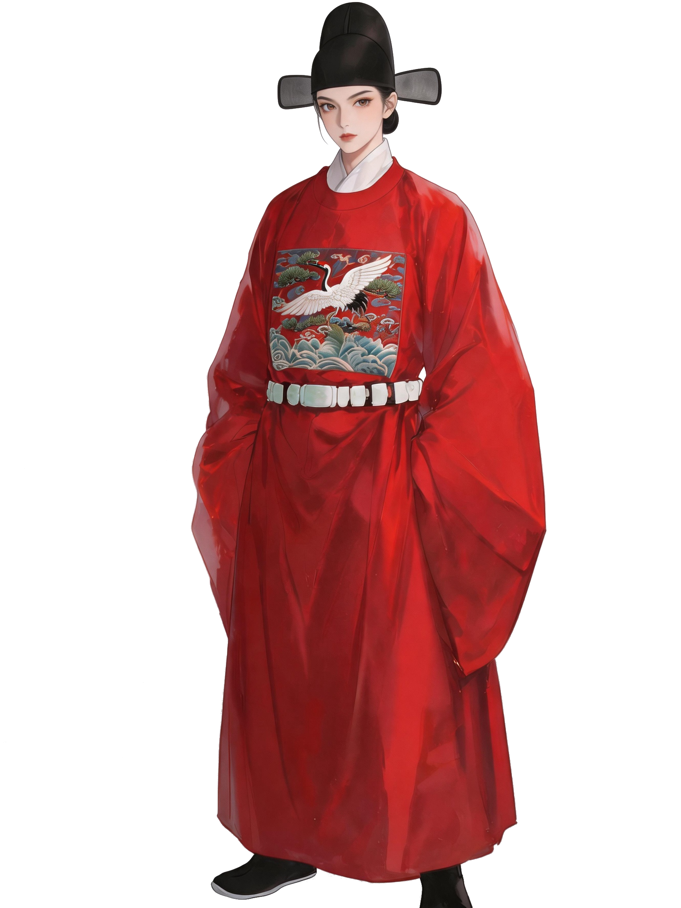
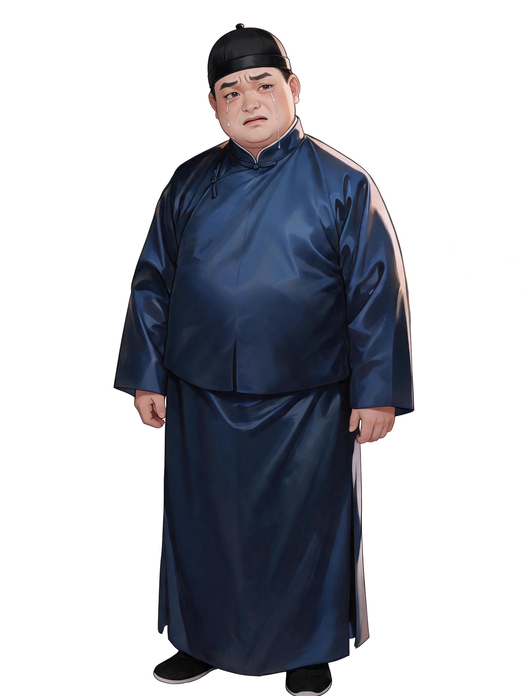
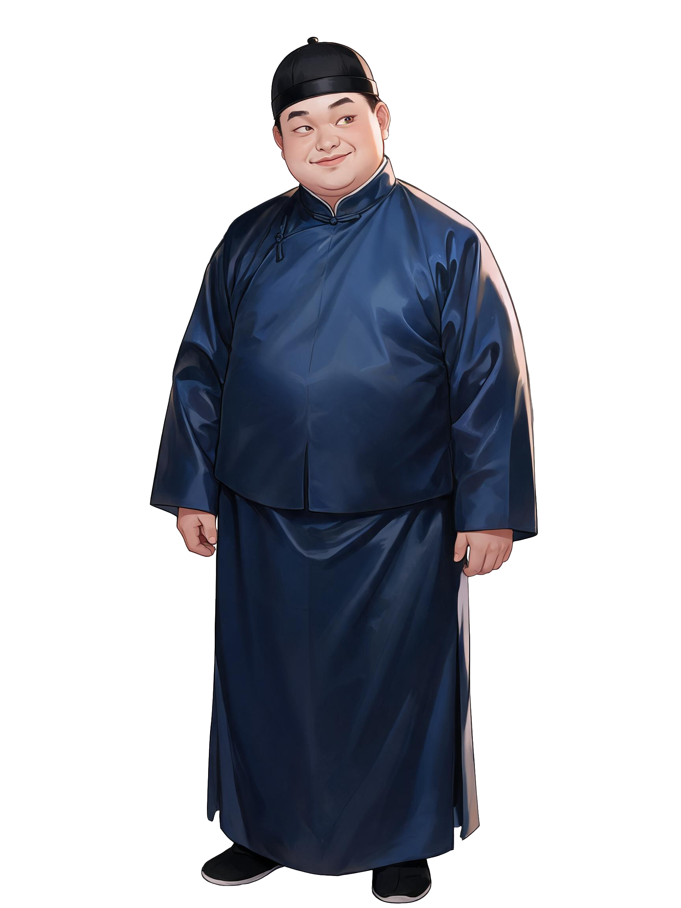
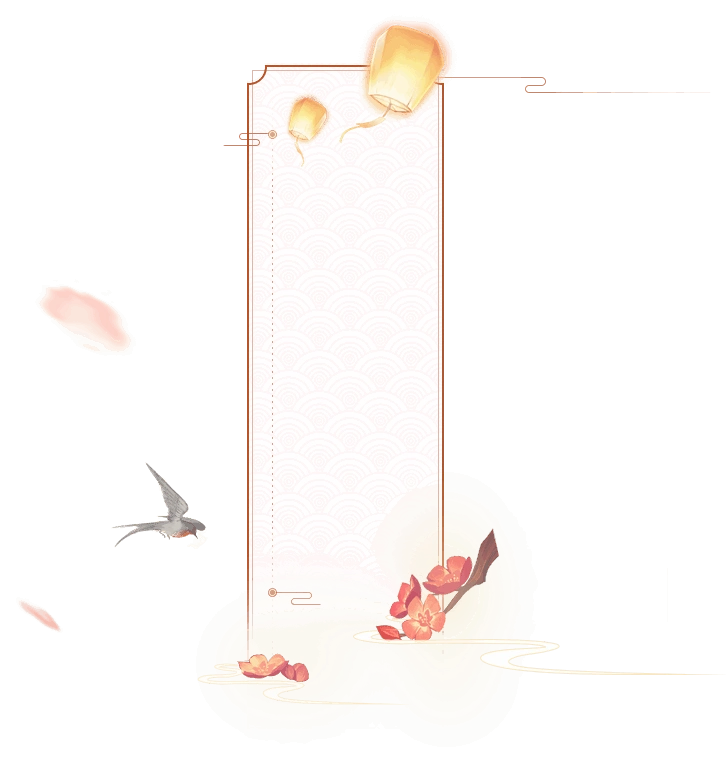

<!DOCTYPE html>
<html lang="zh-CN">
<head>
<meta charset="UTF-8">
<meta name="viewport" content="width=device-width,initial-scale=1.0">
<title>溯疑踪 v5</title>
<style>
*,*::before,*::after{box-sizing:border-box;margin:0;padding:0}
html,body{width:100%;height:100%;overflow:hidden}
body{background:#0a0505;color:#e8dcc8;font-family:"Noto Serif SC","STKaiti","KaiTi","SimSun",serif}
#app{width:100%;height:100%;position:relative;overflow:hidden;display:flex;flex-direction:column}
.corner-tl,.corner-tr,.corner-bl,.corner-br{position:absolute;z-index:3;pointer-events:none;width:26px;height:26px}
.corner-tl{top:3px;left:3px;border-top:2px solid #6b1a1a;border-left:2px solid #6b1a1a}
.corner-tr{top:3px;right:3px;border-top:2px solid #6b1a1a;border-right:2px solid #6b1a1a}
.corner-bl{bottom:3px;left:3px;border-bottom:2px solid #6b1a1a;border-left:2px solid #6b1a1a}
.corner-br{bottom:3px;right:3px;border-bottom:2px solid #6b1a1a;border-right:2px solid #6b1a1a}

.ani-btn{display:inline-flex;align-items:center;justify-content:center;padding:14px 38px;background:linear-gradient(180deg,rgba(80,20,20,0.55),rgba(40,5,5,0.75));border:2px solid #8b6a3a;color:#c9a96e;font-family:"STKaiti","KaiTi",serif;font-size:19px;font-weight:bold;letter-spacing:5px;writing-mode:vertical-rl;cursor:pointer;transition:all 0.3s;box-shadow:0 2px 8px rgba(0,0,0,0.5)}
.ani-btn:hover{background:linear-gradient(180deg,rgba(107,26,26,0.7),rgba(60,10,10,0.9));border-color:#c9a96e;color:#e8dcc8;transform:scale(1.04)}
.ani-btn.disabled{opacity:0.35;pointer-events:none}
.ani-btn.back-btn{padding:10px 28px;font-size:15px;border-color:#4a3a2a;color:#8b7355}
.h-btn{display:inline-flex;align-items:center;justify-content:center;padding:12px 22px;min-width:120px;background:linear-gradient(180deg,rgba(80,20,20,0.55),rgba(40,5,5,0.75));border:2px solid #8b6a3a;color:#c9a96e;font-family:"STKaiti","KaiTi",serif;font-size:16px;font-weight:bold;letter-spacing:2px;cursor:pointer;transition:all 0.3s;box-shadow:0 2px 8px rgba(0,0,0,0.5)}
.h-btn:hover{background:linear-gradient(180deg,rgba(107,26,26,0.7),rgba(60,10,10,0.9));border-color:#c9a96e;color:#e8dcc8;transform:scale(1.04)}
.h-btn.disabled{opacity:0.35;pointer-events:none}
.h-btn.back{opacity:0.65;font-size:14px}

.cover-screen{position:absolute;inset:0;z-index:100;display:flex;flex-direction:column;align-items:center;justify-content:center;overflow:hidden}
.cover-bg{position:absolute;inset:0;background-size:cover;background-position:center;opacity:0;transition:opacity 1.5s ease;z-index:0}
.cover-bg.active{opacity:1}
.cover-overlay{position:absolute;inset:0;z-index:1;pointer-events:none;background:linear-gradient(135deg,rgba(10,5,5,0.65) 0%,rgba(10,5,5,0.25) 50%,rgba(10,5,5,0.65) 100%)}
.cover-content{position:relative;z-index:2;display:flex;flex-direction:column;align-items:center;gap:22px}
.game-title{font-size:48px;color:#c9a96e;letter-spacing:10px;text-shadow:0 0 40px rgba(201,169,110,0.25)}
.game-subtitle{font-size:15px;color:#8b7355;letter-spacing:5px;margin-bottom:10px}

.world-select-screen{position:absolute;inset:0;z-index:100;display:flex;flex-direction:column;align-items:center;justify-content:center;overflow:hidden}
.ws-bg{position:absolute;inset:0;background-size:cover;background-position:center;opacity:0;transition:opacity 1.5s ease;z-index:0}
.ws-bg.active{opacity:1}
.ws-content{position:relative;z-index:2;display:flex;flex-direction:column;align-items:center;gap:18px}
.ws-title{font-size:26px;color:#c9a96e;letter-spacing:6px;text-shadow:0 2px 10px rgba(0,0,0,0.9)}

.prologue-screen{position:absolute;inset:0;z-index:95;background-image:url(tu/旁白背景.jpeg);background-size:cover;background-position:center;display:flex;align-items:center;justify-content:center;cursor:pointer}
.prologue-screen::before{content:"";position:absolute;inset:0;background:rgba(0,0,0,0.35);pointer-events:none}
.prologue-text-block{position:relative;z-index:1;max-width:620px;width:80%;display:flex;flex-direction:column;align-items:center;gap:14px;font-family:"STKaiti","KaiTi",serif;font-size:23px;color:#f0e8d4;line-height:2.4;letter-spacing:3px;text-shadow:0 1px 4px rgba(0,0,0,0.7)}
.prologue-line{opacity:0;transition:opacity 0.6s ease;text-align:center}
.prologue-line.show{opacity:1}
.prologue-hint{margin-top:10px;font-size:15px;color:#c9a96e;opacity:0;transition:opacity 0.6s}
.prologue-hint.show{opacity:1}

.creation-screen{position:absolute;inset:0;z-index:90;background-image:url(tu/家.png);background-size:cover;background-position:center;display:flex;gap:28px;padding:30px}
.creation-screen::before{content:"";position:absolute;inset:0;background:rgba(0,0,0,0.35)}
.creation-preview{flex:1;display:flex;align-items:center;justify-content:center;position:relative;z-index:1;background:rgba(10,5,5,0.3);border:1px solid rgba(201,169,110,0.15);min-height:380px}
.creation-preview img{max-width:85%;max-height:85%;object-fit:contain}
.creation-options{width:350px;display:flex;flex-direction:column;gap:16px;position:relative;z-index:1;overflow-y:auto;padding-right:8px}
.opt-group label{color:#c9a96e;font-size:13px;margin-bottom:6px;display:block;letter-spacing:3px}
.opt-row{display:flex;gap:6px;flex-wrap:wrap}
.opt-btn{padding:8px 16px;background:rgba(10,5,5,0.6);border:1px solid #3a2a1a;color:#b0a090;font-size:13px;cursor:pointer;font-family:inherit;transition:all 0.2s}
.opt-btn:hover{border-color:#6b4a2a;color:#c9a96e}
.opt-btn.sel{background:rgba(107,26,26,0.4);border-color:#c9a96e;color:#c9a96e}
.creation-input{padding:10px 14px;background:rgba(10,5,5,0.6);border:1px solid #3a2a1a;color:#e8dcc8;font-size:16px;font-family:inherit;width:100%;outline:none;letter-spacing:2px}
.creation-input:focus{border-color:#c9a96e}

.opening-screen{position:absolute;inset:0;z-index:85;background-size:cover;background-position:center;display:flex;flex-direction:column;align-items:center;justify-content:flex-end;cursor:pointer}
.opening-screen::before{content:"";position:absolute;inset:0;background:linear-gradient(0deg,rgba(0,0,0,0.7) 0%,rgba(0,0,0,0.15) 50%,rgba(0,0,0,0.05) 100%);pointer-events:none}
.opening-npc{position:absolute;left:2%;bottom:18%;z-index:2;max-height:60vh;max-width:48%;object-fit:contain}
.opening-player{position:absolute;right:0;bottom:18%;z-index:2;max-height:55vh;max-width:42%;object-fit:contain;opacity:0;transition:opacity 0.6s ease}
.opening-player.show{opacity:1}
.opening-text-bar{position:absolute;bottom:0;left:0;right:0;z-index:3;height:28%;min-height:110px;background:linear-gradient(0deg,rgba(10,5,5,0.95) 0%,rgba(20,10,10,0.85) 60%,rgba(20,10,10,0) 100%);display:flex;align-items:center;justify-content:center;padding:10px 40px 30px}
.opening-text-content{color:#e8dcc4;font-size:20px;line-height:2;text-align:center;font-family:"STKaiti","KaiTi",serif;max-width:700px}
.opening-hint{position:absolute;bottom:10px;z-index:4;color:#c9a96e;font-size:14px;animation:pulse 2s ease infinite}
@keyframes pulse{0%,100%{opacity:1}50%{opacity:0.4}}

#top-bar{height:48px;min-height:48px;display:flex;align-items:center;padding:0 10px;gap:7px;background:linear-gradient(180deg,#1a0a0a 0%,#100606 100%);border-bottom:2px solid #6b1a1a;font-size:11px;z-index:10;position:relative}
.tb-btn{padding:3px 9px;background:transparent;border:1px solid #3a1a1a;color:#b0a090;font-size:10px;cursor:pointer;font-family:inherit;transition:all 0.2s}
.tb-btn:hover{background:#2a1010;color:#c9a96e;border-color:#6b1a1a}
.progress-wrap{display:flex;align-items:center;gap:3px}
.progress-bar{width:45px;height:5px;background:#2a1a0a;border-radius:3px;overflow:hidden}
.progress-fill{height:100%;background:linear-gradient(90deg,#6b1a1a,#c9a96e);border-radius:3px;transition:width 0.5s ease}

#scene-view{flex:1;position:relative;overflow:hidden;background:#0a0505;min-height:0}
#scene-bg{position:absolute;top:0;left:0;width:100%;height:100%;background-size:cover;background-position:center}
.scene-npc{position:absolute;z-index:6;cursor:pointer;transition:all 0.3s ease;filter:drop-shadow(0 6px 12px rgba(0,0,0,0.5))}
.scene-npc:hover{filter:brightness(1.1) drop-shadow(0 8px 20px rgba(0,0,0,0.6));transform:scale(1.04);z-index:8}
/* Player portrait on desk — fixed, upper body visible */
.desk-player-portrait{position:fixed;right:3%;bottom:0;width:44vw;max-width:440px;height:auto;z-index:7;object-fit:contain;object-position:top;filter:drop-shadow(0 8px 20px rgba(0,0,0,0.6));pointer-events:none}
.name-card{position:absolute;z-index:9;pointer-events:none;opacity:0;transition:opacity 0.6s ease}
.name-card.show{opacity:1}
.name-card img{width:150px;display:block}
.name-card .nc-text{position:absolute;inset:14% 12% 14% 12%;display:flex;flex-direction:column;align-items:center;justify-content:center;writing-mode:vertical-rl;text-orientation:upright;color:#2a1a0a;font-family:"STKaiti","KaiTi",serif;font-size:14px;line-height:2.2;letter-spacing:5px;font-weight:bold}
.scene-hotspot{position:absolute;cursor:pointer;z-index:5;border:2px dashed rgba(201,169,110,0.5);border-radius:4px;transition:all 0.3s;background:rgba(201,169,110,0.05)}
.scene-hotspot:hover{border-color:rgba(201,169,110,0.9);background:rgba(201,169,110,0.15);box-shadow:0 0 22px rgba(201,169,110,0.22)}
.scene-hotspot .hs-label{position:absolute;bottom:-26px;left:50%;transform:translateX(-50%);white-space:nowrap;font-size:13px;color:#c9a96e;font-weight:bold;text-shadow:0 0 6px rgba(0,0,0,0.95)}
.scene-exit{position:absolute;cursor:pointer;z-index:5;border:2px dashed rgba(130,200,130,0.55);border-radius:4px;transition:all 0.3s;background:rgba(100,180,100,0.06)}
.scene-exit:hover{border-color:rgba(130,220,130,0.9);background:rgba(100,200,100,0.15);box-shadow:0 0 24px rgba(100,200,100,0.25)}
.scene-exit .ex-label{position:absolute;bottom:-24px;left:50%;transform:translateX(-50%);white-space:nowrap;font-size:13px;color:#b0e8b0;font-weight:bold;text-shadow:0 0 6px rgba(0,0,0,0.95)}
.scene-exit .ex-icon{position:absolute;top:50%;left:50%;transform:translate(-50%,-50%);font-size:20px;pointer-events:none;opacity:0.8}

#text-area{min-height:115px;max-height:180px;padding:10px 14px;background:linear-gradient(0deg,#100606 0%,#1a0a0a 100%);border-top:2px solid #6b1a1a;overflow-y:auto;display:flex;flex-direction:column;gap:3px;z-index:11;position:relative}
.text-line{animation:fadeUp 0.35s ease;padding:3px 8px;border-left:2px solid transparent;display:flex;align-items:flex-start;gap:6px;font-size:13px;line-height:1.7}
.text-line.narration{color:#8b7355;font-style:italic;justify-content:center;border-left-color:transparent;text-align:center}
.text-line.npc{color:#e0d8c4;border-left-color:#6b1a1a;background:rgba(107,26,26,0.04)}
.text-line.player{color:#c0d8e8;border-left-color:#4a7a9a;background:rgba(30,60,90,0.06);flex-direction:row-reverse}
.text-line .tl-speaker{color:#c9a96e;font-weight:700;white-space:nowrap;min-width:42px;font-size:11px}
.text-line.player .tl-speaker{color:#7ca8c8}
.text-line .tl-msg{color:#d4d0c4;line-height:1.7}
.text-line .tl-portrait{width:38px;height:38px;border-radius:3px;object-fit:cover;border:1px solid #3a1a1a;flex-shrink:0}
.text-line.system{color:#6b8b5a;border-left-color:#4a6a3a;justify-content:center}

#input-area{padding:10px 14px 12px;background:linear-gradient(0deg,#0a0505 0%,#100606 100%);border-top:1px solid #2a1a0a;display:flex;flex-direction:column;gap:8px;z-index:11;position:relative}
#quick-bar{display:flex;gap:5px;flex-wrap:wrap;min-height:26px}
.quick-chip{padding:4px 12px;background:rgba(26,10,10,0.8);border:1px solid #3a1a1a;color:#b0a090;font-size:11px;cursor:pointer;font-family:inherit;transition:all 0.2s}
.quick-chip:hover{background:#2a1010;color:#c9a96e;border-color:#6b1a1a}
#input-row{display:flex;gap:8px}
#chat-input{flex:1;padding:10px 14px;background:rgba(26,10,10,0.9);border:1px solid #3a1a1a;color:#e8dcc8;font-size:14px;font-family:inherit;outline:none}
#chat-input:focus{border-color:#6b1a1a}
#chat-input::placeholder{color:#5a4a3a}
#send-btn{padding:10px 24px;background:#6b1a1a;border:1px solid #8b2a2a;color:#e8dcc8;font-size:14px;font-family:inherit;font-weight:600;cursor:pointer;letter-spacing:2px}
#send-btn:hover{background:#8b2a2a}

/* === DIALOGUE === */
.dlg-overlay{position:absolute;inset:0;z-index:80;background:rgba(3,1,1,0.94);animation:fadeIn 0.4s ease}
.dlg-exit{position:absolute;top:10px;left:10px;z-index:200;padding:8px 18px;background:rgba(107,26,26,0.7);border:2px solid #c9a96e;color:#c9a96e;cursor:pointer;font-size:14px;font-family:inherit;letter-spacing:2px;pointer-events:auto!important}
.dlg-exit:hover{background:#8b2a2a;color:#fff}
.dlg-stage{position:absolute;inset:0;z-index:1;display:flex;align-items:flex-end;justify-content:center;gap:6%;padding:0 4%;pointer-events:none}
.dlg-portrait-box{display:flex;flex-direction:column;align-items:center;width:46%;opacity:0;transition:opacity 0.6s ease}
.dlg-portrait-box.show{opacity:1}
.dlg-portrait-img{max-height:90vh;max-width:100%;object-fit:contain;object-position:bottom;filter:drop-shadow(0 8px 20px rgba(0,0,0,0.5))}
.dlg-portrait-name{color:#c9a96e;font-size:14px;letter-spacing:3px;margin-top:4px;font-weight:bold}
.dlg-chat-area{position:absolute;bottom:52px;left:0;right:0;z-index:90;max-height:140px;min-height:80px;overflow-y:auto;padding:8px 16px;background:rgba(5,2,2,0.95);border-top:1px solid #6b1a1a;pointer-events:auto}
.dlg-msg{color:#d4d0c4;font-size:14px;line-height:1.7;margin-bottom:2px}
.dlg-msg .w{color:#c9a96e;font-weight:700}
.dlg-msg.me .w{color:#7ca8c8}
.dlg-input-row{position:absolute;bottom:0;left:0;right:0;z-index:91;display:flex;flex-direction:column;padding:4px 10px;gap:4px;background:rgba(18,8,8,0.97);border-top:1px solid #3a1a1a;pointer-events:auto}
.dlg-inner{display:flex;gap:6px}
.dlg-input-row input{flex:1;padding:8px 12px;background:rgba(26,10,10,0.8);border:1px solid #3a1a1a;color:#e8dcc8;font-family:inherit;font-size:14px;outline:none;pointer-events:auto}
.dlg-input-row input:focus{border-color:#6b1a1a}
.dlg-input-row button{padding:8px 18px;background:#6b1a1a;border:1px solid #8b2a2a;color:#e8dcc8;cursor:pointer;font-family:inherit;pointer-events:auto}
.dlg-input-row button:hover{background:#8b2a2a}
.dlg-hints{display:flex;gap:3px;flex-wrap:wrap}
.dlg-hint-chip{padding:2px 8px;background:rgba(107,26,26,0.25);border:1px solid rgba(201,169,110,0.2);color:#b0a090;font-size:10px;cursor:pointer;font-family:inherit;border-radius:2px;transition:all 0.2s;pointer-events:auto}
.dlg-hint-chip:hover{background:rgba(107,26,26,0.5);border-color:#c9a96e;color:#c9a96e}

#case-panel{position:absolute;top:48px;right:0;width:280px;height:calc(100% - 48px);background:linear-gradient(180deg,#1a0a0a 0%,#100606 100%);border-left:2px solid #6b1a1a;transform:translateX(100%);transition:transform 0.4s ease;z-index:20;overflow-y:auto;padding:16px}
#case-panel.open{transform:translateX(0)}
#case-panel h3{color:#c9a96e;margin-bottom:12px;font-size:16px;letter-spacing:3px;border-bottom:1px solid #3a1a1a;padding-bottom:7px}
.case-section{margin-bottom:14px}
.case-section h4{color:#8b7355;font-size:11px;margin-bottom:5px;letter-spacing:2px}
.case-item{padding:6px 7px;margin-bottom:2px;background:rgba(26,10,10,0.6);border:1px solid #2a1a0a;font-size:12px;color:#b0a090}
.case-item.found{border-left:3px solid #c9a96e;color:#e8dcc8}

.menu-overlay{position:absolute;inset:0;z-index:40;background:rgba(0,0,0,0.82);display:flex;flex-direction:column;align-items:center;justify-content:center;animation:fadeIn 0.4s ease}
.menu-overlay h2{color:#c9a96e;font-size:22px;letter-spacing:4px;margin-bottom:4px}
.menu-overlay .menu-sub{color:#8b7355;font-size:13px;margin-bottom:14px}
.menu-overlay .menu-row{display:flex;gap:10px;flex-wrap:wrap;justify-content:center}

.ending-overlay{position:absolute;inset:0;z-index:50;background:rgba(0,0,0,0.92);display:flex;flex-direction:column;align-items:center;justify-content:center;animation:fadeIn 0.6s ease}

.loc-panel{position:absolute;top:48px;right:0;width:200px;background:rgba(26,10,10,0.97);border:1px solid #6b1a1a;z-index:30;padding:12px}
.loc-item{padding:7px 9px;margin-bottom:2px;background:rgba(26,10,10,0.5);border:1px solid #2a1a0a;color:#b0a090;cursor:pointer;font-size:12px;transition:all 0.2s}
.loc-item:hover{background:rgba(40,16,16,0.5);border-color:#6b1a1a;color:#c9a96e}
.kw-prompt{position:absolute;bottom:140px;left:50%;transform:translateX(-50%);z-index:15;pointer-events:none;color:#8b7355;font-size:11px;text-align:center;opacity:0.7}

@keyframes fadeIn{from{opacity:0}to{opacity:1}}
@keyframes fadeUp{from{opacity:0;transform:translateY(5px)}to{opacity:1;transform:translateY(0)}}

/* === AMBIENT EFFECTS === */
/* Scene vignette */
#scene-view::after{content:"";position:absolute;inset:0;z-index:2;pointer-events:none;background:radial-gradient(ellipse at center,transparent 50%,rgba(0,0,0,0.45) 100%)}
/* Floating dust particles */
#scene-view .dust{position:absolute;z-index:1;pointer-events:none;width:2px;height:2px;background:#c9a96e;border-radius:50%;opacity:0;animation:floatDust 8s ease-in-out infinite}
@keyframes floatDust{0%{opacity:0;transform:translate(0,0)}10%{opacity:0.4}90%{opacity:0.4}100%{opacity:0;transform:translate(20px,-60px)}}
/* Cursor lantern */
#cursor-glow{position:fixed;pointer-events:none;z-index:9999;width:200px;height:200px;border-radius:50%;background:radial-gradient(circle,rgba(201,169,110,0.1) 0%,rgba(180,140,80,0.03) 35%,transparent 60%);transform:translate(-50%,-50%);transition:left 0.15s ease-out,top 0.15s ease-out;display:none}
#cursor-glow.on{display:block}
/* Button hover pulse */
.ani-btn:hover,.h-btn:hover{animation:btnPulse 0.6s ease}
@keyframes btnPulse{0%{box-shadow:0 0 0 rgba(201,169,110,0)}50%{box-shadow:0 0 24px rgba(201,169,110,0.3)}100%{box-shadow:0 0 0 rgba(201,169,110,0)}}
/* Title golden shine sweep */
.game-title{position:relative;background:linear-gradient(90deg,#c9a96e 0%,#f5e6b8 25%,#c9a96e 50%,#f5e6b8 75%,#c9a96e 100%);background-size:200% 100%;-webkit-background-clip:text;-webkit-text-fill-color:transparent;background-clip:text;animation:titleShine 3s ease-in-out infinite;text-shadow:none}
@keyframes titleShine{0%{background-position:200% 0}100%{background-position:-200% 0}}
/* Ink bleed top border on text area */
#text-area{position:relative}
#text-area::after{content:"";position:absolute;top:-3px;left:5%;right:5%;height:4px;background:linear-gradient(90deg,transparent,rgba(107,26,26,0.5),rgba(201,169,110,0.3),rgba(107,26,26,0.5),transparent);pointer-events:none;border-radius:0 0 50% 50%}
/* Scene parallax (subtle) */
#scene-bg{transition:transform 0.3s ease-out}
/* Clue discovery — gentle golden flash */
#clue-overlay{position:fixed;inset:0;z-index:100;pointer-events:none;box-shadow:inset 0 0 0 rgba(201,169,110,0);transition:box-shadow 0.6s ease-out}
#clue-overlay.flash{box-shadow:inset 0 0 80px rgba(201,169,110,0.4)}
.text-line.clue-glow{animation:clueGlow 2s ease-out;border-left-color:#c9a96e!important;font-size:15px!important}
@keyframes clueGlow{0%{color:#c9a96e}100%{color:#6b8b5a}}

@media(orientation:landscape)and(max-width:900px){.dlg-portrait-img{max-height:55vh}#text-area{min-height:80px;max-height:130px}}
@media(orientation:portrait){#scene-view{max-height:32vh}.dlg-portrait-img{max-height:40vh}.game-title{font-size:30px}}
</style>
</head>
<body><div id="app"></div>

<script>
var SAVE_KEY="suyizong_v5";
var Save={save:function(s){try{var d={v:5,t:Date.now(),w:s.world,pn:s.playerName,pg:s.playerGender,pc:s.playerColor,cc:s.currentCase,cs:s.currentScene,ct:s.currentTime,cl:s.discoveredClues,sf:s.spokenFlags,tc:s.totalClues,dc:s.dayCount,er:s.endingReached,sc:s.screen};localStorage.setItem(SAVE_KEY,JSON.stringify(d));return true}catch(e){try{sessionStorage.setItem(SAVE_KEY,JSON.stringify(d));return true}catch(e2){return false}}},load:function(){try{var r=localStorage.getItem(SAVE_KEY)||sessionStorage.getItem(SAVE_KEY);if(!r)return null;var d=JSON.parse(r);return d.v===5?d:null}catch(e){return null}},hasSave:function(){try{return!!(localStorage.getItem(SAVE_KEY)||sessionStorage.getItem(SAVE_KEY))}catch(e){return false}},del:function(){try{localStorage.removeItem(SAVE_KEY);sessionStorage.removeItem(SAVE_KEY)}catch(e){}}};
</script>

<script>
var Game={state:{screen:"cover",world:"ancient",playerName:"",playerGender:"女",playerColor:"red",currentCase:null,currentScene:null,currentTime:"dawn",discoveredClues:[],spokenFlags:{},totalClues:0,dayCount:1,endingReached:null},cases:{},
init:function(){UI.showCover();},
startNewGame:function(w){this.state.world=w;this.state.playerName="";this.state.playerGender="女";this.state.playerColor="red";this.state.currentCase=null;this.state.currentScene=null;this.state.currentTime="dawn";this.state.discoveredClues=[];this.state.spokenFlags={};this.state.totalClues=0;this.state.dayCount=1;this.state.endingReached=null;this.state.screen="prologue";UI.showPrologue();},
onPrologueDone:function(){this.state.screen="creation";UI.showCreation();},
onCreateDone:function(n,g,c){this.state.playerName=n||"无名";this.state.playerGender=g;this.state.playerColor=c;this.state.screen="opening";Save.save(this.state);UI.showOpening1();},
onOpeningDone:function(){var c=this.state.world==="ancient"?this.cases["ancient_case_001"]:null;if(c)this.enterCase(c);},
enterCase:function(cd){this.state.currentCase=cd.id;this.state.currentScene=cd.startScene;this.state.currentTime=cd.startTime||"dawn";this.state.discoveredClues=[];this.state.spokenFlags={};this.state.totalClues=(cd.clues||[]).length;this.state.dayCount=1;this.state.screen="playing";Save.save(this.state);UI.renderScene(cd);},
goToScene:function(sid){var c=this.getCurrentCase();if(!c||!c.scenes[sid])return;this.state.currentScene=sid;Save.save(this.state);UI.renderScene(this.getCurrentCase());if(sid==="desk")setTimeout(function(){UI.showDeskMenu();},600);},
advanceTime:function(){var o=["dawn","noon","evening","night"],i=o.indexOf(this.state.currentTime);if(i<o.length-1)this.state.currentTime=o[i+1];else{this.state.currentTime="dawn";this.state.dayCount++;}Save.save(this.state);UI.renderScene(this.getCurrentCase());UI.addNarration("天色流转，已是"+this.getTimeLabel(this.state.currentTime)+"。");if(this.state.currentTime==="night")setTimeout(function(){UI.askReturnHome();},1500);},
addClue:function(cid){if(this.state.discoveredClues.indexOf(cid)>=0)return;this.state.discoveredClues.push(cid);UI.addSystem("【获得线索】已记录到案卷中。");Save.save(this.state);var c=this.getCurrentCase();if(c&&c.checkEnding)c.checkEnding(this.state,this);},
hasClue:function(cid){return this.state.discoveredClues.indexOf(cid)>=0;},
markSpoken:function(nid,t){if(!this.state.spokenFlags[nid])this.state.spokenFlags[nid]=[];if(this.state.spokenFlags[nid].indexOf(t)<0)this.state.spokenFlags[nid].push(t);},
hasSpoken:function(nid,t){return(this.state.spokenFlags[nid]||[]).indexOf(t)>=0;},
getCurrentCase:function(){return this.cases[this.state.currentCase];},
getSceneData:function(){var c=this.getCurrentCase();if(!c)return null;var s=c.scenes[this.state.currentScene];if(!s)return null;return(s.times&&s.times[this.state.currentTime])?s.times[this.state.currentTime]:s;},
getTimeLabel:function(t){return{dawn:"清晨",noon:"午间",evening:"傍晚",night:"深夜"}[t]||t;},
getSceneImageKey:function(sid){var m={weaver_shop_interior:"绸缎店",weaver_shop_street:"街道",jail:"地牢",pawn_street:"当铺",desk:"家",backyard:"后院"};return m[sid]||sid;},
getTimeImageKey:function(t){var m={dawn:"清晨",noon:"中午",evening:"下午",night:"下午"};return m[t]||t;},
getSceneBg:function(sid,t){var sim={desk:"家",backyard:"后院"};if(sim[sid])return"tu/"+sim[sid]+".png";return"tu/"+this.getSceneImageKey(sid)+"-"+this.getTimeImageKey(t)+".png";},
getPlayerPortrait:function(exp){var g=this.state.playerGender||"女",c=this.state.playerColor||"red",cs=c==="red"?"":(c==="blue"?"-蓝色":"-绿色");return"tu/"+g+"官-"+(exp||"正常")+cs+".png";},
registerCase:function(id,data){this.cases[id]=data;}
};
</script>

<script>
/* === PORTRAIT SYSTEM — NPC + Player emotions === */
var Portrait={
  npcHas:{老周:["正常","哭泣","生气"],赵三:["正常","不耐烦","得意","惊慌"],阿福:["正常","惊恐"],打更老王:["正常"]},
  npcFB:{老周:{impatient:"生气",scared:"生气",panic:"生气",smug:"正常"},赵三:{cry:"惊慌",angry:"不耐烦",scared:"惊慌"},阿福:{cry:"惊恐",angry:"惊恐",panic:"惊恐",impatient:"惊恐"}},
  emMap:{normal:"正常",cry:"哭泣",angry:"生气",scared:"惊恐",smug:"得意",impatient:"不耐烦",panic:"惊慌",think:"思考",smile:"微笑"},
  getNPC:function(n,e){if(!this.npcHas[n])return"";var s=this.emMap[e]||"正常",list=this.npcHas[n]||["正常"];if(list.indexOf(s)<0){var fb=this.npcFB[n]||{},fbEm=fb[e]||"正常";s=fbEm;}return"tu/"+n+"-"+s+".png";},
  getPlayer:function(em){var g=Game.state.playerGender||"女",c=Game.state.playerColor||"red",cs=c==="red"?"":(c==="blue"?"-蓝色":"-绿色"),s=em||"正常";return"tu/"+g+"官-"+s+cs+".png";},
  inferNPC:function(t,d){if(d)return"angry";if(t.indexOf("大人！")>=0||t.indexOf("做主")>=0||t.indexOf("冤枉")>=0)return"cry";if(t.indexOf("不记得")>=0||t.indexOf("吓")>=0)return"scared";if(t.indexOf("哈哈")>=0)return"smug";if(t.indexOf("呃")>=0)return"impatient";return"normal";},
  inferPlayer:function(t){if(t.indexOf("查看")>=0||t.indexOf("检查")>=0||t.indexOf("推理")>=0||t.indexOf("思考")>=0||t.indexOf("整理")>=0)return"思考";if(t.indexOf("真相")>=0||t.indexOf("拿下")>=0||t.indexOf("收网")>=0||t.indexOf("结案")>=0)return"微笑";return"正常";}
};
</script>

<script>
var Input={parse:function(t){t=t.trim();if(!t)return{intent:"empty"};if(t==="存档"){Save.save(Game.state);UI.addSystem("已存档。");return{intent:"sys"};}if(t==="读档"){var s=Save.load();if(s){Game.state.world=s.w;Game.state.playerName=s.pn;Game.state.playerGender=s.pg;Game.state.playerColor=s.pc;Game.state.currentCase=s.cc;Game.state.currentScene=s.cs;Game.state.currentTime=s.ct;Game.state.discoveredClues=s.cl;Game.state.spokenFlags=s.sf;Game.state.totalClues=s.tc;Game.state.dayCount=s.dc;Game.state.endingReached=s.er;Game.state.screen=s.sc;var c=Game.getCurrentCase();if(c)UI.renderScene(c);UI.addSystem("已读档。");}else UI.addSystem("无存档。");return{intent:"sys"};}if(t==="案卷"||t==="线索"){UI.toggleCasePanel();return{intent:"sys"};}if(t==="帮助"){UI.addSystem("查看+物品 / 找NPC对话 / 去+地点 / 切换时辰");return{intent:"help"};}if(t==="下一个时辰"||t==="等待"){Game.advanceTime();return{intent:"time"};}if(t==="回府"){Game.goToScene("desk");return{intent:"sys"};}var ints=[{kw:["查看","检查","观察","看","验","搜","翻"],intent:"examine"},{kw:["问","说","聊","对话","询问","质问","打听","审问"],intent:"talk"},{kw:["去","走","前往","到","进","出","离开","回"],intent:"goto"},{kw:["拿","取","收集","捡"],intent:"take"},{kw:["推理","推断","思考","怀疑"],intent:"think"}];for(var ei=0;ei<ints.length;ei++){var e=ints[ei];for(var ki=0;ki<e.kw.length;ki++){if(t.indexOf(e.kw[ki])>=0){var tg=t.replace(e.kw[ki],"").replace(/[的了呢吧吗啊呀哦哈嗯着过]/g,"").trim();return{intent:e.intent,target:tg,raw:t};}}}return{intent:"talk",target:t,raw:t};},
handle:function(r){var sd=Game.getSceneData(),cd=Game.getCurrentCase();if(!cd)return;switch(r.intent){case"examine":this.ex(r.target,sd);break;case"talk":this.tk(r.target,sd,cd);break;case"goto":this.go(r.target,sd);break;case"take":this.ta(r.target,sd);break;case"think":this.th();break;default:UI.addNarration("（你还不确定该怎么做，先看看周围或找人问问吧。）");}},
ex:function(t,sd){if(!sd||!sd.interactables||sd.interactables.length===0){UI.addNarration("这里没什么特别的。");return;}if(!t){UI.addNarration("你想查看什么？");return;}for(var i=0;i<sd.interactables.length;i++){var it=sd.interactables[i];if(this.fz(t,[it.name,it.label].concat(it.aliases||[]))){UI.addPlayerAction("查看了"+it.label);UI.addNarration(it.examineText||"你仔细看了看。");if(it.clueId&&!Game.hasClue(it.clueId))Game.addClue(it.clueId);return;}}UI.addNarration("这里没有「"+t+"」。");},
tk:function(t,sd,cd){if(!sd||!sd.npcs||sd.npcs.length===0){UI.addNarration("这里没有人可以说话。");return;}var m=null;for(var i=0;i<sd.npcs.length;i++){if(t&&this.fz(t,[sd.npcs[i].label,sd.npcs[i].name].concat(sd.npcs[i].aliases||[]))){m=sd.npcs[i];break;}}if(!m){if(sd.npcs.length===1)m=sd.npcs[0];else{UI.addNarration("你想找谁？这里有："+sd.npcs.map(function(n){return n.label;}).join("、")+"。");return;}}var nd=cd.npcs?cd.npcs[m.name]:null;if(!nd){UI.addDialogue(m.label,"……","normal");return;}var top=this.ext(t||"",m),resp=this.respond(m,nd,top,sd,cd);Game.markSpoken(m.name,top);var em=resp.emotion||Portrait.inferNPC(resp.text||"",!!resp.clueId);if(resp.clueId&&!Game.hasClue(resp.clueId)){UI.addDialogue(m.label,resp.text,em);setTimeout(function(){Game.addClue(resp.clueId);},1000);}else UI.addDialogue(m.label,resp.text,em);},
go:function(t,sd){if(!sd||!sd.exits||sd.exits.length===0){UI.addNarration("没有别的地方可去。");return;}if(!t){UI.addNarration("你想去哪里？可去："+sd.exits.map(function(e){return e.label;}).join("、")+"。");return;}for(var i=0;i<sd.exits.length;i++){if(this.fz(t,[sd.exits[i].label].concat(sd.exits[i].aliases||[]))){UI.addNarration("你前往了"+sd.exits[i].label+"。");Game.goToScene(sd.exits[i].target);return;}}UI.addNarration("去不了「"+t+"」。");},
ta:function(t,sd){if(!sd||!sd.interactables){UI.addNarration("没什么可拿的。");return;}for(var i=0;i<sd.interactables.length;i++){var it=sd.interactables[i];if(t&&this.fz(t,[it.name,it.label].concat(it.aliases||[]))){if(it.clueId){UI.addPlayerAction("收起了"+it.label);Game.addClue(it.clueId);}else UI.addNarration(it.label+"不是证物。");return;}}UI.addNarration("拿不了「"+t+"」。");},
th:function(){var c=Game.state.discoveredClues.length;if(c===0)UI.addNarration("还没有线索，先去案发现场看看吧。");else UI.addNarration("你把线索在脑中过了一遍……当前："+c+"条。继续查探吧。");},
fz:function(t,kw){if(!t)return false;t=t.toLowerCase();for(var i=0;i<kw.length;i++){if(!kw[i])continue;if(t.indexOf(kw[i].toLowerCase())>=0||kw[i].toLowerCase().indexOf(t)>=0)return true;}return false;},
ext:function(t,npc){var c=t,as=(npc.aliases||[]).concat([npc.label,npc.name]);for(var i=0;i<as.length;i++)if(as[i])c=c.replace(as[i],"").trim();return c.replace(/[的了呢吧吗啊呀哦哈嗯着过]/g,"").trim()||t;},
respond:function(npc,nd,topic,sd,cd){var de=nd.dialogues||{},te=de[Game.state.currentTime];if(te&&te.text&&!Game.hasSpoken(nd.name,"t_"+Game.state.currentTime)){Game.markSpoken(nd.name,"t_"+Game.state.currentTime);return{text:te.text,clueId:te.clueId||null,emotion:te.emotion||null};}var km=nd.keywords||{};for(var p in km){if(!km.hasOwnProperty(p))continue;if(this.fz(topic,p.split("|"))){var r=km[p];if(typeof r==="function")return r(Game.state);return{text:r.text||r,clueId:r.clueId||null,emotion:r.emotion||null};}}if(nd.clueAware)for(var ca in nd.clueAware){if(nd.clueAware.hasOwnProperty(ca)&&Game.hasClue(ca)){var ar=nd.clueAware[ca];if(typeof ar==="function")return ar(Game.state);return{text:ar.text||ar,clueId:ar.clueId||null,emotion:ar.emotion||null};}}if(nd.fallbacks&&nd.fallbacks.length>0)return{text:nd.fallbacks[Math.floor(Math.random()*nd.fallbacks.length)],emotion:"normal"};return{text:nd.defaultDialogue||"……",emotion:"normal"};},
getHints:function(npc,nd){var h=[],km=nd.keywords||{},keys=Object.keys(km);for(var i=0;i<Math.min(keys.length,8);i++){var p=keys[i].split("|")[0];if(h.indexOf(p)<0)h.push(p);}return h;}
};
</script>

<script>
var UI={_ct:null,_wt:null,
showCover:function(){if(this._ct)clearInterval(this._ct);setGlow(true);document.getElementById("app").innerHTML='<div class="cover-screen" id="cover"><div class="cover-bg active" style="background-image:url(tu/标题-女官.png)"></div><div class="cover-bg" style="background-image:url(tu/标题-男官.png)"></div><div class="cover-overlay"></div><div class="cover-content"><h1 class="game-title">溯疑踪</h1><p class="game-subtitle">双世奇案 · 由你执笔</p><button class="ani-btn" onclick="UI.showWS()">进入游戏</button><button class="ani-btn'+(Save.hasSave()?'':' disabled')+'" onclick="UI.goCont()">继续游戏</button></div></div>';var a=0;this._ct=setInterval(function(){a=1-a;var bs=document.querySelectorAll("#cover .cover-bg");for(var i=0;i<bs.length;i++)bs[i].classList.toggle("active",i===a);},3000);},
goCont:function(){if(!Save.hasSave())return;var s=Save.load();if(s){Game.state.world=s.w;Game.state.playerName=s.pn;Game.state.playerGender=s.pg;Game.state.playerColor=s.pc;Game.state.currentCase=s.cc;Game.state.currentScene=s.cs;Game.state.currentTime=s.ct;Game.state.discoveredClues=s.cl;Game.state.spokenFlags=s.sf;Game.state.totalClues=s.tc;Game.state.dayCount=s.dc;Game.state.endingReached=s.er;Game.state.screen=s.sc;if(Game.state.screen==="playing"){var c=Game.getCurrentCase();if(c){UI.renderScene(c);return;}}}UI.showCover();},
showWS:function(){if(this._ct)clearInterval(this._ct);if(this._wt)clearInterval(this._wt);document.getElementById("app").innerHTML='<div class="world-select-screen" id="ws"><div class="ws-bg active" style="background-image:url(tu/选择世界观-女版.png)"></div><div class="ws-bg" style="background-image:url(tu/选择世界观-男版.png)"></div><div class="cover-overlay"></div><div class="ws-content"><h2 class="ws-title">选择你的时代</h2><button class="ani-btn" onclick="UI.selW(\'ancient\')">古代·大理寺卿</button><button class="ani-btn" onclick="UI.selW(\'modern\')">现代·特案组警察</button><button class="ani-btn back-btn" onclick="UI.showCover()">返回</button></div></div>';var a=0;this._wt=setInterval(function(){a=1-a;var bs=document.querySelectorAll("#ws .ws-bg");for(var i=0;i<bs.length;i++)bs[i].classList.toggle("active",i===a);},3000);},
selW:function(w){if(w==="modern"){this.addNarration("现代篇开发中，先体验古代篇！");setTimeout(function(){Game.startNewGame("ancient");},1200);}else Game.startNewGame(w);},
showPrologue:function(){var L=["大燕王朝，建元三年。天下初定，百废待兴。","你，寒门出身，凭科举入仕，本在地方为官。","三年前一桩连环命案震动朝野，无人敢接。","你毛遂自荐，七日内告破，天子亲批「断案如神」。","自此，你被破格擢升为大理寺卿，执掌天下刑狱。","上任不过半月，案牍尚未来得及整理，","新的案子……就递到了你的案前。"];document.getElementById("app").innerHTML='<div class="prologue-screen" id="ps"><div class="prologue-text-block" id="ptb"></div></div>';var box=document.getElementById("ptb"),idx=0;function add(){if(idx>=L.length){var h=document.createElement("div");h.className="prologue-hint show";h.textContent="— 点击继续 —";h.onclick=function(e){e.stopPropagation();Game.onPrologueDone();};box.appendChild(h);return;}var el=document.createElement("div");el.className="prologue-line";el.textContent=L[idx];box.appendChild(el);idx++;setTimeout(function(){el.classList.add("show");},30);}add();document.getElementById("ps").onclick=function(){if(idx>=L.length)Game.onPrologueDone();else add();};},
showCreation:function(){document.getElementById("app").innerHTML='<div class="creation-screen"><div class="creation-preview"></div><div class="creation-options"><div class="opt-group"><label>姓名</label><input class="creation-input" id="cn" placeholder="输入你的名字" maxlength="8"></div><div class="opt-group"><label>性别</label><div class="opt-row"><button class="opt-btn sel" data-g="gender" data-v="女" onclick="UI.sc(this)">女</button><button class="opt-btn" data-g="gender" data-v="男" onclick="UI.sc(this)">男</button></div></div><div class="opt-group"><label>衣色</label><div class="opt-row"><button class="opt-btn sel" data-g="color" data-v="red" onclick="UI.sc(this)">红色</button><button class="opt-btn" data-g="color" data-v="blue" onclick="UI.sc(this)">蓝色</button><button class="opt-btn" data-g="color" data-v="green" onclick="UI.sc(this)">绿色</button></div></div><button class="ani-btn" onclick="UI.cfC()" style="align-self:center">确认创建</button></div></div>';},
sc:function(b){var g=b.getAttribute("data-g");document.querySelectorAll("[data-g='"+g+"']").forEach(function(x){x.classList.remove("sel")});b.classList.add("sel");var ge=(document.querySelector("[data-g=gender].sel")||{}).getAttribute("data-v")||"女",co=(document.querySelector("[data-g=color].sel")||{}).getAttribute("data-v")||"red",cs=co==="red"?"":(co==="blue"?"-蓝色":"-绿色"),p=document.getElementById("pv");if(p)p.src="tu/"+ge+"官-正常"+cs+".png";},
cfC:function(){var n=(document.getElementById("cn")||{}).value||"";n=n.trim()||"无名";var g=(document.querySelector("[data-g=gender].sel")||{}).getAttribute("data-v")||"女",c=(document.querySelector("[data-g=color].sel")||{}).getAttribute("data-v")||"red";Game.onCreateDone(n,g,c);},
showOpening1:function(){var pi=Game.getPlayerPortrait("正常");document.getElementById("app").innerHTML='<div class="opening-screen" id="op1" style="background-image:url(tu/衙门外背景.png)"><div class="opening-text-bar"><div class="opening-text-content" id="opt1">大人！您可得为我做主啊！<br>昨夜我的绸缎庄被人砸了！那赵三喝醉了酒，冲到铺子里来闹事！</div></div><div class="opening-hint" id="oph1">点击继续</div></div>';var cl=0,s=this;document.getElementById("op1").onclick=function(){cl++;if(cl===1){document.getElementById("opt1").innerHTML='老周跪在地上，泣不成声。你看着他——绸缎庄掌柜，平日里也是个体面人。';}else if(cl===2){document.getElementById("opt1").innerHTML='<span style="color:#7ca8c8;">「细细招来，不得遗漏。」</span>';var pp=document.getElementById("opp1");pp.style.display="block";setTimeout(function(){pp.classList.add("show")},50);document.getElementById("oph1").textContent="再次点击进入衙门";}else s.showOpening2();};},
showOpening2:function(){document.getElementById("app").innerHTML='<div class="opening-screen" id="op2" style="background-image:url(tu/衙门内背景.png)"><div class="opening-text-bar"><div class="opening-text-content">大人，这是案情的详细情况。<br>铺子被砸得一塌糊涂，值钱的料子全毁了。<br>巡捕已经把赵三押回来了，他身上全是酒气。<br>您一定要替小人做主啊！</div></div><div class="opening-hint">点击接案</div></div>';document.getElementById("op2").onclick=function(){Game.onOpeningDone();};},

/* === MAIN SCENE === */
renderScene:function(cd){this._cl();var sd=Game.getSceneData();if(!sd)return;var sn=(cd.scenes[Game.state.currentScene]||{}).name||"",tl=Game.getTimeLabel(Game.state.currentTime),bg=Game.getSceneBg(Game.state.currentScene,Game.state.currentTime),cs=Game.state.discoveredClues.length+"/"+Game.state.totalClues,pct=Game.state.totalClues>0?Math.round(Game.state.discoveredClues.length/Game.state.totalClues*100):0;var playerImg=Game.getPlayerPortrait("正常");var isDesk=Game.state.currentScene==="desk";document.getElementById("app").innerHTML='<div id="top-bar"><span style="color:#c9a96e;font-weight:bold">[古]</span><span style="color:#b8a070">'+tl+'</span><span style="color:#e8dcc8;font-weight:600;flex:1">'+sn+'</span><div class="progress-wrap"><span style="color:#8b7355;font-size:10px">'+cs+'</span><div class="progress-bar"><div class="progress-fill" style="width:'+pct+'%"></div></div></div><button class="tb-btn" style="color:#c9a96e;border-color:#6b1a1a" onclick="Save.save(Game.state);UI.addSystem(\'已存档。\')">存档</button><button class="tb-btn" onclick="UI.toggleCasePanel()">案卷</button><button class="tb-btn" onclick="Game.advanceTime()">时辰</button><button class="tb-btn" onclick="UI.showLoc()">地点</button></div><div id="scene-view"><div id="scene-bg" style="background-image:url('+bg+');background-size:cover;background-position:center"></div><div class="corner-tl"></div><div class="corner-tr"></div><div class="corner-bl"></div><div class="corner-br"></div>'+(isDesk?'':"")+this._hs(sd)+this._npc(sd)+this._ex(sd)+'</div><div id="text-area"><div class="text-line narration"><span class="tl-msg">'+(sd.description||"...")+'</span></div></div><div id="input-area"><div id="quick-bar">'+this._qb(sd)+'</div><div id="input-row"><input id="chat-input" type="text" placeholder="输入你想说的话或做的事……" onkeydown="if(event.key===\'Enter\')UI.si()"><button id="send-btn" onclick="UI.si()">确认</button></div></div><div id="case-panel"></div>';setTimeout(function(){var inp=document.getElementById("chat-input");if(inp)inp.focus();},200);this._npcCards(sd);this._kwP(sd);this._addDust();this._parallaxBg();},
_hs:function(sd){var is=sd.interactables||[];if(is.length===0)return"";return is.map(function(i){return'<div class="scene-hotspot" style="left:'+i.x+'%;top:'+i.y+'%;width:'+i.w+'%;height:'+i.h+'%;" onclick="Input.handle({intent:\'examine\',target:\''+(i.name||i.label)+'\'})"><span class="hs-label">🔍 '+i.label+'</span></div>';}).join("");},
_npc:function(sd){var ns=sd.npcs||[];if(ns.length===0)return"";var pm={"老周":"tu/老周-正常.png","阿福":"tu/阿福-正常.png","赵三":"tu/赵三-正常.png","打更老王":"tu/打更老王-正常.png"};return ns.map(function(n){var s=pm[n.label]||"";if(!s)return"";return'';}).join("");},
_ex:function(sd){var es=sd.exits||[];if(es.length===0)return"";return es.map(function(e){return'<div class="scene-exit" style="left:'+e.x+'%;top:'+e.y+'%;width:'+e.w+'%;height:'+e.h+'%;" onclick="Input.handle({intent:\'goto\',target:\''+e.label+'\'})"><span class="ex-icon">🚪</span><span class="ex-label">▶ '+e.label+'</span></div>';}).join("");},
_npcCards:function(sd){var ns=sd.npcs||[];if(ns.length===0)return;var sv=document.getElementById("scene-view");if(!sv)return;var tm={"老周":"绸缎庄掌柜","阿福":"小伙计","赵三":"街上的酒鬼","打更老王":"更夫","当铺掌柜":"当铺掌柜"};for(var i=0;i<ns.length;i++){var n=ns[i],nc=document.createElement("div");nc.className="name-card";nc.innerHTML='<div class="nc-text">'+n.label+'<br>'+(tm[n.label]||"")+'</div>';nc.style.cssText="left:"+(n.x+n.w/2-10)+"%;top:"+Math.max(2,n.y-24)+"%;";sv.appendChild(nc);(function(c){setTimeout(function(){c.classList.add("show")},50);setTimeout(function(){c.classList.remove("show")},3000)})(nc);}},
_kwP:function(sd){var ns=sd.npcs||[],is=sd.interactables||[],es=sd.exits||[],hints=[];for(var i=0;i<ns.length;i++)hints.push("找"+ns[i].label);for(var j=0;j<Math.min(is.length,3);j++)hints.push(is[j].label);for(var k=0;k<es.length;k++)hints.push("去"+es[k].label);hints.push("时辰");var app=document.getElementById("app"),old=document.querySelector(".kw-prompt");if(old)old.remove();if(!hints.length)return;var el=document.createElement("div");el.className="kw-prompt";el.textContent="试试： "+hints.join(" · ");app.appendChild(el);},
_qb:function(sd){var cs=[];var is=sd.interactables||[];for(var i=0;i<Math.min(is.length,3);i++)cs.push('<button class="quick-chip" onclick="Input.handle({intent:\'examine\',target:\''+(is[i].name||is[i].label)+'\'})">查看'+is[i].label+'</button>');var ns=sd.npcs||[];for(var j=0;j<Math.min(ns.length,3);j++)cs.push('<button class="quick-chip" onclick="UI.startDlg(\''+ns[j].label+'\')">'+ns[j].label+'</button>');cs.push('<button class="quick-chip" onclick="Game.advanceTime()">下一时辰</button>');if(Game.state.currentScene!=="desk")cs.push('<button class="quick-chip" onclick="Game.goToScene(\'desk\')">回府</button>');if(Game.state.currentScene==="desk")cs.push('<button class="quick-chip" onclick="UI.showDeskMenu()">梳理案件</button>');return cs.join("");},
si:function(){var inp=document.getElementById("chat-input");if(!inp||!inp.value.trim())return;var t=inp.value.trim();inp.value="";this.addPlayerAction(t);Input.handle(Input.parse(t));},

/* === DIALOGUE — dual portrait with player emotion === */
_dlgN:null,_lastPlayerText:"",
startDlg:function(npcLabel){var cd=Game.getCurrentCase();if(!cd)return;var ne=null,sd=Game.getSceneData();if(sd&&sd.npcs)for(var i=0;i<sd.npcs.length;i++){if(sd.npcs[i].label===npcLabel){ne=sd.npcs[i];break;}}var nd=cd.npcs?cd.npcs[(ne||{}).name]:null;if(!nd)return;this._dlgN={ne:ne,nd:nd,lb:npcLabel};this._lastPlayerText="";var npi=Portrait.getNPC(npcLabel,"normal"),ppi=Portrait.getPlayer("正常"),app=document.getElementById("app");var ov=document.createElement("div");ov.className="dlg-overlay";ov.id="dlgo";var eb=document.createElement("button");eb.className="dlg-exit";eb.textContent="← 退出";eb.onclick=function(){ov.remove();UI.renderScene(Game.getCurrentCase());};ov.appendChild(eb);var stg=document.createElement("div");stg.className="dlg-stage";var nb=document.createElement("div");nb.className="dlg-portrait-box npc-side";nb.id="dnb";if(npi){var ni=document.createElement("img");ni.className="dlg-portrait-img";ni.src=npi;ni.id="dlg-npc-img";nb.appendChild(ni);}var nn=document.createElement("div");nn.className="dlg-portrait-name";nn.textContent=npcLabel;nb.appendChild(nn);stg.appendChild(nb);var pb=document.createElement("div");pb.className="dlg-portrait-box player-side";pb.id="dpb";var pi2=document.createElement("img");pi2.className="dlg-portrait-img";pi2.src=ppi;pi2.id="dlg-player-img";pb.appendChild(pi2);var pn=document.createElement("div");pn.className="dlg-portrait-name";pn.textContent=Game.state.playerName;pb.appendChild(pn);stg.appendChild(pb);ov.appendChild(stg);var ch=document.createElement("div");ch.className="dlg-chat-area";ch.id="dlgc";var m=document.createElement("div");m.className="dlg-msg";m.innerHTML='<span class="w">'+npcLabel+"：</span>"+(nd.defaultDialogue||"……");ch.appendChild(m);ov.appendChild(ch);var idv=document.createElement("div");idv.className="dlg-input-row";var hints=Input.getHints(ne,nd);var hd=document.createElement("div");hd.className="dlg-hints";for(var hi=0;hi<hints.length;hi++){(function(h){var c=document.createElement("span");c.className="dlg-hint-chip";c.textContent=h;c.onclick=function(){var inp2=document.getElementById("dlgi");if(inp2){inp2.value=h;UI.sd()}};hd.appendChild(c)})(hints[hi]);}idv.appendChild(hd);var inner=document.createElement("div");inner.className="dlg-inner";var inp2=document.createElement("input");inp2.id="dlgi";inp2.placeholder="输入想说的话（可点击关键词）";inp2.onkeydown=function(e){if(e.key==="Enter")UI.sd();};inner.appendChild(inp2);var btn2=document.createElement("button");btn2.textContent="说话";btn2.onclick=function(){UI.sd();};inner.appendChild(btn2);idv.appendChild(inner);ov.appendChild(idv);app.appendChild(ov);setTimeout(function(){document.getElementById("dnb").classList.add("show");document.getElementById("dpb").classList.add("show");document.getElementById("dlgi").focus();},80);},
_updNpc:function(em){var img=document.getElementById("dlg-npc-img"),dl=this._dlgN;if(img&&dl){var src=Portrait.getNPC(dl.lb,em||"normal");if(src)img.src=src;}},
_updPlayer:function(em){var img=document.getElementById("dlg-player-img");if(img)img.src=Portrait.getPlayer(em||"正常");},
sd:function(){var inp=document.getElementById("dlgi");if(!inp||!inp.value.trim())return;var t=inp.value.trim();inp.value="";this._lastPlayerText=t;var ch=document.getElementById("dlgc");if(!ch)return;var pm=document.createElement("div");pm.className="dlg-msg me";pm.innerHTML='<span class="w">'+Game.state.playerName+"：</span>"+t;ch.appendChild(pm);ch.scrollTop=ch.scrollHeight;var pe=Portrait.inferPlayer(t);this._updPlayer(pe);var dl=this._dlgN;if(!dl)return;var s=this;setTimeout(function(){var sd2=Game.getSceneData(),cd2=Game.getCurrentCase();var top=Input.ext(t,dl.ne||{label:dl.lb,aliases:[]});var resp=Input.respond(dl.ne,dl.nd,top,sd2,cd2);Game.markSpoken((dl.ne||{}).name||dl.lb,top);var em=resp.emotion||Portrait.inferNPC(resp.text||"",!!resp.clueId);s._updNpc(em);var rm=document.createElement("div");rm.className="dlg-msg";rm.innerHTML='<span class="w">'+dl.lb+"：</span>"+(resp.text||"……");ch.appendChild(rm);ch.scrollTop=ch.scrollHeight;if(resp.clueId&&!Game.hasClue(resp.clueId))setTimeout(function(){Game.addClue(resp.clueId)},600);var di=document.getElementById("dlgi");if(di)di.focus();},400);},

/* === DESK MENU — with player portrait emotion === */
_updDeskPlayer:function(em){var img=document.getElementById("desk-player-img");if(img)img.src=Portrait.getPlayer(em||"正常");},
showDeskMenu:function(){this._updDeskPlayer("思考");var cl=Game.state.discoveredClues.length,ce=cl>=4,app=document.getElementById("app"),ov=document.createElement("div");ov.className="menu-overlay";ov.id="dm";ov.innerHTML='<h2>回府 — 第'+Game.state.dayCount+'天</h2><div class="menu-sub">整理今日所得，梳理线索</div><div class="menu-row"><button class="h-btn" onclick="UI.dr()">📋 整理线索</button><button class="h-btn" onclick="UI.dm()">🔍 推理动机</button><button class="h-btn" onclick="UI.dc()">📝 对比证词</button>'+(ce?'<button class="h-btn" onclick="UI.dv()" style="border-color:#c9a96e">⚖ 准备结案</button>':'<button class="h-btn disabled">准备结案（线索不足）</button>')+'<button class="h-btn back" onclick="UI.closeDM()">继续查案</button></div>';app.appendChild(ov);},
closeDM:function(){var m=document.getElementById("dm");if(m)m.remove();this._updDeskPlayer("正常");},
dr:function(){this.closeDM();this._updDeskPlayer("思考");var cl=Game.state.discoveredClues,cd=Game.getCurrentCase();if(cl.length===0){this.addNarration("案卷空空如也。");return;}this.addNarration("—— 线索整理 · 第"+Game.state.dayCount+"天 ——");var cs=cd.clues||[];for(var i=0;i<cs.length;i++)if(cl.indexOf(cs[i].id)>=0)this.addNarration("✓ "+cs[i].name+"："+cs[i].desc);this.addNarration("你画出连线：门栓内部破坏+钥匙只有掌柜有=内部所为。当铺记录+账本借款=老周缺钱。老王看到人影穿绸缎=老周嫌疑。");setTimeout(function(){UI._updDeskPlayer("正常");UI.showAD();},2500);},
dm:function(){this.closeDM();this._updDeskPlayer("思考");this.addNarration("—— 动机分析 ——");this.addNarration("老周：账本急用借款、频繁进出当铺→经济动机强烈。赵三：欠钱被扣工钱→砸店只会赔更多，动机不足。");setTimeout(function(){UI._updDeskPlayer("正常");UI.showAD();},2000);},
dc:function(){this.closeDM();this._updDeskPlayer("思考");this.addNarration("—— 证词对比 ——");this.addNarration("老周：赵三砸店。赵三：不记得去过。老王：人影穿绸缎，不像醉汉。阿福：听到钥匙声。→老周证词多处矛盾。");setTimeout(function(){UI._updDeskPlayer("正常");UI.showAD();},2000);},
dv:function(){this.closeDM();this._updDeskPlayer("微笑");var cl=Game.state.discoveredClues,crit=["clue_broken_bolt","clue_key_sound","clue_pawn_record","clue_account_book"];var all=true;for(var i=0;i<crit.length;i++)if(cl.indexOf(crit[i])<0){all=false;break;}if(all)this.showEC();else this.showEC({inc:true});},
showAD:function(){var app=document.getElementById("app"),ov=document.createElement("div");ov.className="menu-overlay";ov.id="ad";ov.innerHTML='<h2>夜深了</h2><div class="menu-sub">第'+Game.state.dayCount+'天即将结束</div><div class="menu-row"><button class="h-btn" onclick="UI.kr()">继续梳理</button><button class="h-btn" onclick="UI.gs()" style="border-color:#8ab88a">就寝，明日继续</button></div>';app.appendChild(ov);},
kr:function(){var m=document.getElementById("ad");if(m)m.remove();this.addNarration("你继续在案桌前思索……");this._updDeskPlayer("思考");setTimeout(function(){UI.showDeskMenu();},800);},
gs:function(){var m=document.getElementById("ad");if(m)m.remove();Game.state.currentTime="dawn";Game.state.dayCount++;Save.save(Game.state);UI.renderScene(Game.getCurrentCase());UI.addNarration("一夜安眠。第"+Game.state.dayCount+"天清晨。");},
askReturnHome:function(){var app=document.getElementById("app"),ov=document.createElement("div");ov.className="menu-overlay";ov.innerHTML='<h2>天色已深</h2><div class="menu-sub">该回府整理线索了</div><div class="menu-row"><button class="h-btn" onclick="this.parentElement.parentElement.remove();Game.goToScene(\'desk\')">回府梳理</button><button class="h-btn back" onclick="this.parentElement.parentElement.remove();UI.addNarration(\'继续留在这里。\')">继续在此</button></div>';app.appendChild(ov);},

/* === ENDING === */
showEC:function(o){o=o||{};var app=document.getElementById("app"),ov=document.createElement("div");ov.className="ending-overlay";if(o.inc){ov.innerHTML='<h2>线索尚不完整</h2><p>证据还不够充足。直接定案有风险。</p><div class="menu-row"><button class="h-btn" id="btn-continue">继续调查</button><button class="h-btn back" id="btn-force">强行定案</button></div>';app.appendChild(ov);document.getElementById("btn-continue").addEventListener("click",function(){ov.remove();UI.addNarration("你决定继续调查。");});document.getElementById("btn-force").addEventListener("click",function(){ov.remove();UI.doEnding("wrong");});}else{ov.innerHTML='<h2>真相已浮出水面</h2><p>所有证据都指向老周——绸缎庄掌柜。自导自演，嫁祸赵三。</p><div class="menu-row"><button class="h-btn" id="btn-trap">设局收网</button><button class="h-btn back" id="btn-direct">直接拿下</button></div>';app.appendChild(ov);document.getElementById("btn-trap").addEventListener("click",function(){ov.remove();UI.doEnding("trap");});document.getElementById("btn-direct").addEventListener("click",function(){ov.remove();UI.doEnding("direct");});}},

doEnding:function(type){
  Game.state.screen="ending";Game.state.endingReached=type;Save.save(Game.state);setGlow(false);
  var L=[],app=document.getElementById("app");
  if(type==="trap"){L=["你放出消息：赵三因证据不足，无罪释放。","当晚老周果然悄悄返回铺子，撬开后院地砖取出银两。","埋伏的衙役一拥而上，人赃并获。","公堂之上铁证如山：断裂的门栓、钥匙声、当铺记录、账本借款。","老周低头认罪：赌博欠债，自导自演，嫁祸赵三。","赵三当堂释放，走出牢房的那一刻，阳光正好。"];}
  else if(type==="direct"){L=["你带着全部证据，直接前往绸缎庄拿人。","老周起初极力抵赖，拒不认罪。","但当你撬开后院松动的地砖——那包银两赫然出现。","他哑口无言。案子结了，赵三被释放，老周被押入大牢。","但你总觉得，少了点什么。"];}
  else{L=["你决定不再拖延，直接定案。","赵三被杖责二十，赔偿铺子损失五十两——他哪里拿得出。","一个月后，有人在隔壁县城看到了老周。","他新开了一家绸缎庄，出手阔绰。","他笑着说：大理寺那位大人，还得谢谢他呢。","真凶逍遥法外……而你，手中握着那根断裂的门栓。"];}
  var idx=0;
  app.innerHTML='<div class="opening-screen" id="ep-scr" style="background-image:url(tu/衙门内背景.png)"><div class="opening-text-bar"><div class="opening-text-content" id="ep-txt">'+L[0]+'</div></div><div class="opening-hint" id="ep-hint">点击继续</div></div>';
  idx=1;
  var scr=document.getElementById("ep-scr"),txt=document.getElementById("ep-txt"),hint=document.getElementById("ep-hint"),self=this;
  scr.addEventListener("click",function(){
    if(idx>=L.length){self.endingCourt(type);return;}
    txt.innerHTML=L[idx];hint.textContent=idx<L.length-1?'点击继续':'点击升堂';idx++;
  });
},

endingCourt:function(type){
  setGlow(false);var app=document.getElementById("app"),self=this;
  function finalScreen(){app.innerHTML='<div class="cover-screen" style="z-index:90"><div class="cover-overlay"></div><div class="cover-content"><h2 style="color:#c9a96e;font-size:22px;letter-spacing:4px">案件已结</h2><p style="color:#8b7355;margin-bottom:20px">醉汉砸铺案 · 完</p><button class="ani-btn" id="bb">返回封面</button></div></div>';document.getElementById("bb").addEventListener("click",function(){Save.del();Game.init();});}
  if(type!=="trap"){finalScreen();return;}
  // 设局收网 → 升堂审问
  var D=[
    {s:"你",t:"老周，你可知罪？"},
    {s:"老周",t:"大人……我、我认罪。",e:"cry"},
    {s:"你",t:"你为何要砸自己的铺子，嫁祸给赵三？"},
    {s:"老周",t:"我赌博欠了债……从账上借了急用钱，又去当铺周转。窟窿越来越大，实在没办法了。",e:"cry"},
    {s:"你",t:"那门栓是你从里面破坏的？"},
    {s:"老周",t:"是……我用钥匙开了门，从里面把门栓弄断，布置成被打砸的样子。",e:"normal"},
    {s:"你",t:"阿福听到的钥匙声，就是你开门的声音。后院那包银两也是你藏的。"},
    {s:"老周",t:"……是。我以为没人会注意到。",e:"cry"},
    {s:"你",t:"来人。老周赌博欠债、自导自演、嫁祸无辜，押入大牢候审。赵三，当堂释放。"},
    {s:"老周",t:"大人……我认罚。",e:"cry"}
  ];
  var npcImg=type==="trap"?"老周":"老周";
  app.innerHTML='<div class="opening-screen" id="court-scr" style="background-image:url(tu/衙门内背景.png)"><div class="opening-text-bar"><div class="opening-text-content" id="court-txt"></div></div><div class="opening-hint" id="court-hint">点击继续</div></div>';
  var ci=0,ct=document.getElementById("court-txt"),ch=document.getElementById("court-hint"),cn=document.getElementById("court-npc"),cp=document.getElementById("court-player");
  function show(){
    if(ci>=D.length){finalScreen();return;}
    var d=D[ci],color=d.s==="你"?"#7ca8c8":"#c9a96e";ct.innerHTML='<span style="color:'+color+'">'+d.s+"：</span>"+d.t;
    ch.textContent=ci<D.length-1?'点击继续':'点击结束';
    if(d.s==="老周"&&d.e){var src=Portrait.getNPC("老周",d.e);if(src)cn.src=src;}
    if(d.s==="你"){cp.src=Portrait.getPlayer(Portrait.inferPlayer(d.t));}else{cp.src=Portrait.getPlayer("正常");}
    ci++;
  }
  show();
  document.getElementById("court-scr").addEventListener("click",function(){show();});
},

/* === PANELS === */
toggleCasePanel:function(){var p=document.getElementById("case-panel");if(!p)return;if(p.classList.contains("open")){p.classList.remove("open");return;}var cd=Game.getCurrentCase();if(!cd)return;var ch="",cs=cd.clues||[];for(var i=0;i<cs.length;i++){var f=Game.state.discoveredClues.indexOf(cs[i].id)>=0;ch+='<div class="case-item'+(f?" found":"")+'"><span class="ci-mark">'+(f?"✓":"?")+'</span> '+cs[i].name+(f?'<br><small style="color:#8b7355;margin-left:18px">'+(cs[i].desc||"")+'</small>':"")+'</div>';}var nh="",ns=cd.npcs||{};for(var k in ns)if(ns.hasOwnProperty(k))nh+='<div class="case-item">'+ns[k].name+' — '+ns[k].role+'</div>';p.innerHTML='<h3>案卷 · '+cd.title+'</h3><div class="case-section"><h4>线索 ('+Game.state.discoveredClues.length+'/'+Game.state.totalClues+')</h4>'+ch+'</div><div class="case-section"><h4>人物</h4>'+nh+'</div>';p.classList.add("open");},
showLoc:function(){var ex=document.querySelector(".loc-panel");if(ex){ex.remove();return;}var cd=Game.getCurrentCase();if(!cd||!cd.scenes)return;var sc=cd.scenes,cur=Game.state.currentScene,items="";for(var k in sc){if(!sc.hasOwnProperty(k))continue;if(k===cur)continue;items+='<div class="loc-item" onclick="Game.goToScene(\''+k+'\');var lp=document.querySelector(\'.loc-panel\');if(lp)lp.remove()">'+sc[k].name+'</div>';}if(!items){this.addSystem("没有其他地方可去。");return;}var pn=document.createElement("div");pn.className="loc-panel";pn.innerHTML='<h4 style="color:#c9a96e;margin-bottom:8px">可前往</h4>'+items;document.getElementById("app").appendChild(pn);},

/* === TEXT === */
addNarration:function(t){var ta=document.getElementById("text-area");if(!ta)return;var el=document.createElement("div");el.className="text-line narration";el.innerHTML='<span class="tl-msg">'+t+'</span>';ta.appendChild(el);ta.scrollTop=ta.scrollHeight;},
addDialogue:function(sp,t,em){var ta=document.getElementById("text-area");if(!ta)return;var el=document.createElement("div");el.className="text-line"+(sp==="你"?" player":" npc");var ph="";if(sp!=="你"){var npi=Portrait.getNPC(sp.replace("打更","").replace("老王","打更老王"),em||"normal");if(npi)ph='';}else ph='';el.innerHTML=ph+'<span class="tl-speaker">'+sp+'</span><span class="tl-msg">'+t+'</span>';ta.appendChild(el);ta.scrollTop=ta.scrollHeight;},
addSystem:function(t){var ta=document.getElementById("text-area");if(!ta)return;var isClue=t.indexOf("线索")>=0;var el=document.createElement("div");el.className="text-line system"+(isClue?" clue-glow":"");el.innerHTML='<span class="tl-msg">'+t+'</span>';ta.appendChild(el);ta.scrollTop=ta.scrollHeight;if(isClue){window.flashClue();}},
addPlayerAction:function(t){this.addDialogue("你",t,"normal");},
/* Dust particles in scene */
_addDust:function(){var sv=document.getElementById("scene-view");if(!sv)return;for(var i=0;i<8;i++){var d=document.createElement("div");d.className="dust";d.style.left=Math.random()*90+"%";d.style.top=Math.random()*80+"%";d.style.animationDelay=Math.random()*8+"s";d.style.animationDuration=(6+Math.random()*6)+"s";sv.appendChild(d);}},
/* Subtle parallax on scene background */
_parallaxBg:function(){var sb=document.getElementById("scene-bg"),sv=document.getElementById("scene-view");if(!sb||!sv)return;sv.addEventListener("mousemove",function(e){var r=sv.getBoundingClientRect(),x=(e.clientX-r.left)/r.width-0.5,y=(e.clientY-r.top)/r.height-0.5;sb.style.transform="translate("+(x*8)+"px,"+(y*8)+"px) scale(1.03)";});sv.addEventListener("mouseleave",function(){sb.style.transform="translate(0,0) scale(1)";});},
_cl:function(){if(this._ct){clearInterval(this._ct);this._ct=null}if(this._wt){clearInterval(this._wt);this._wt=null}}
};
</script>

<script>
var CASE_001={id:"ancient_case_001",title:"醉汉砸铺案",startScene:"weaver_shop_interior",startTime:"dawn",
clues:[{id:"clue_broken_bolt",name:"断裂的门栓",desc:"从内部破坏，不像外面撞开"},{id:"clue_oil_lamp",name:"翻倒的油灯",desc:"灯油还没干透"},{id:"clue_key_sound",name:"钥匙开锁声",desc:"阿福听到钥匙声——钥匙只有掌柜有"},{id:"clue_pawn_record",name:"当铺出入记录",desc:"老周频繁出入当铺，手头很紧"},{id:"clue_zhao_testimony",name:"赵三的证词",desc:"不记得去过铺子"},{id:"clue_account_book",name:"账本借款记录",desc:"急用借款，案发前一天"},{id:"clue_hidden_coins",name:"藏匿的银两",desc:"后院挖出一包银两"}],
npcs:{
lao_zhou:{name:"老周",title:"绸缎庄掌柜",role:"真凶",defaultDialogue:"大人，我这铺子被砸得惨啊……",
keywords:{"昨晚|发生|经过":{text:"那赵三喝得醉醺醺的，冲到铺子里来闹事！砸了柜台、撕了布匹、还推倒了油灯！",emotion:"cry"},"赵三|酒鬼|嫌犯":{text:"赵三平时就爱喝酒，喝醉了就闹事。但他就是个混账，没那个脑子搞预谋。",emotion:"normal"},"证据|线索":{text:"大人您自己看看现场。门栓上的痕迹很奇怪，不像从外面撞开的。",clueId:"clue_broken_bolt",emotion:"impatient"},"门栓|门|锁":{text:"那门栓上的痕迹——要说从外面撞开，痕迹不该是那样的。",emotion:"normal"},"油灯|灯":{text:"油灯倒在地上，灯油洒了一地。赵三真喝醉了哪还有心思管油灯？",emotion:"normal"},"阿福|伙计":{text:"阿福那孩子胆小，当时吓坏了躲在后院。大人可以去问问他。",emotion:"normal"},"当铺|缺钱":{text:"呃……近来生意不太好，确实周转了几次。",emotion:"impatient"},"损失|赔":{text:"损失大概一百多两。这些绸缎都是上好的料子。",emotion:"cry"},"欠钱|债务":{text:"赵三确实欠我钱——他摔坏了我一批货，我扣了他工钱。",emotion:"normal"},"动机|为什么|谁":{text:"就是赵三！他欠我钱、被我扣了工钱——喝了酒什么事干不出来？",emotion:"angry"},"账本|借款":{text:"……那是周转用的。做生意嘛，总有手头紧的时候。",clueId:"clue_account_book",emotion:"impatient"},"后院|藏|银两":{text:"后、后院？那儿就是堆放杂物的地方。",clueId:"clue_hidden_coins",emotion:"panic"},"赌博|赌":{text:"大人这话从何说起！我周某人清清白白做生意！",emotion:"angry"}},
clueAware:{"clue_pawn_record":{text:"大人，我去当铺只是暂时周转……",emotion:"impatient"},"clue_key_sound":{text:"钥匙只有我和阿福有……但他那天晚上不在铺子里！",emotion:"angry"},"clue_account_book":{text:"那笔借款是周转用的……",emotion:"impatient"},"clue_hidden_coins":{text:"那、那是我攒的私房钱！绝不是赃款！",emotion:"panic"}},
fallbacks:["大人，您一定得替我做主啊！","赵三他喝醉了什么都干得出来。"],
dialogues:{dawn:{text:"大人！赵三他喝醉了就来砸店，不是第一次了！",emotion:"cry"},noon:{text:"损失大概一百多两。赵三欠我钱，怀恨在心。",emotion:"normal"},evening:{text:"大人，天色不早了，您也辛苦了一天。",emotion:"normal"}}},
zhao_san:{name:"赵三",title:"街上的酒鬼",role:"被冤枉者",defaultDialogue:"大人……我真的不记得了……",
keywords:{"昨晚|发生":{text:"大人我冤枉！我喝了不少酒，但真不记得去过周老板的铺子。",clueId:"clue_zhao_testimony",emotion:"panic"},"老周|掌柜":{text:"老周他扣我工钱！我摔坏了一匹绸缎，他扣了我工钱。但我没砸他铺子！",emotion:"angry"},"欠钱|债务":{text:"我是欠他钱，那是因为摔坏绸缎他扣了我工钱。",emotion:"normal"},"喝酒|醉":{text:"我承认我爱喝两口。但喝醉了砸店？那是要挨板子的大事！",emotion:"impatient"},"门栓|钥匙":{text:"我连铺子的门朝哪开都不太记得了！哪还能开锁？",emotion:"normal"},"当铺|赌":{text:"老周去当铺？哈哈！我就说他最近不对头。",emotion:"smug"},"清白|冤枉":{text:"大人您去查，查出来要是我干的，我甘愿挨板子。",emotion:"cry"}},
clueAware:{"clue_pawn_record":{text:"哈哈哈！我就说老周有问题！他肯定欠了钱！",emotion:"smug"},"clue_key_sound":{text:"钥匙开锁的声音？有钥匙的人才能进铺子！我可没有！",emotion:"smug"}},
fallbacks:["大人，我虽然是个酒鬼，但不是坏人啊……","老周他看我不顺眼不是一天两天了。"],
dialogues:{noon:{text:"大人！我冤枉！我要有那胆子砸店，还能在街上混？",clueId:"clue_zhao_testimony",emotion:"panic"},evening:{text:"我想起来了——那天晚上我在东街酒摊喝的酒。",emotion:"normal"}}},
a_fu:{name:"阿福",title:"小伙计",role:"重要证人",defaultDialogue:"我、我什么都不知道……",
keywords:{"钥匙|开锁":{text:"我听到了钥匙开锁的声音。铺子的钥匙只有掌柜有……",clueId:"clue_key_sound",emotion:"scared"},"老周|掌柜":{text:"掌柜的最近脾气不太好，老是凶我。",emotion:"scared"},"门栓|门":{text:"那天早上开门时门栓已经断了。但我记得头天晚上锁好门才走的。",emotion:"normal"},"当铺|缺钱":{text:"掌柜最近老往当铺跑，我偷偷跟过一次。他当了块玉佩。",clueId:"clue_pawn_record",emotion:"scared"},"害怕|不敢|威胁":{text:"掌柜的说……要是我乱说话，就把我辞了。",emotion:"scared"},"听到|看到":{text:"我躲在后面，听到了砸东西的声音。不敢出来……",emotion:"scared"}},
clueAware:{"clue_broken_bolt":{text:"门栓从里面坏的？那掌柜说赵三砸门进来的……这不对啊。",emotion:"normal"}},
fallbacks:["我……我真的不知道更多了。","我就是个打杂的小伙计……"],
dialogues:{dawn:{text:"我吓坏了，躲在后院没敢出来……",emotion:"scared"},noon:{text:"我听到钥匙开锁的声音。",clueId:"clue_key_sound",emotion:"scared"},evening:{text:"大人，我什么都说了。您千万别告诉掌柜的……",emotion:"scared"}}},
wang_gengfu:{name:"打更老王",title:"更夫",role:"目击者",defaultDialogue:"老朽打了几十年更，街上夜里的事都逃不过我的眼睛。",
keywords:{"昨晚|看到|人影":{text:"三更天路过绸缎庄，远远看到一个人影跑出去——步伐稳健，不像醉汉。",emotion:"normal"},"人影|身形":{text:"那人穿的不是粗布衣裳，像是绸缎料子——走路很稳当。",emotion:"normal"},"赵三|酒鬼":{text:"那个人影不像是赵三。赵三喝醉了东倒西歪，那个人跑得很快很稳。",emotion:"normal"},"老周|掌柜":{text:"周掌柜最近几个月总是愁眉苦脸的。",emotion:"normal"},"其他|还有":{text:"那人跑的方向是往东街。东街那边……有几家赌坊。",emotion:"normal"},"动静|声音":{text:"有砸东西的声音，还有撕布的声音。",emotion:"normal"}},
clueAware:{"clue_pawn_record":{text:"周掌柜去当铺？前阵子我在东街看到他低着头走得很快。",emotion:"normal"}},
fallbacks:["老朽知道的都说了。大人英明。"],
dialogues:{dawn:{text:"老朽三更听到动静，远远看到一个人影从铺子方向跑开。",emotion:"normal"},noon:{text:"那人影穿的不是粗布衣裳，像是绸缎料子。",emotion:"normal"},evening:{text:"老朽知道的都说了。",emotion:"normal"}}},
pawn_broker:{name:"pawn_broker",title:"当铺掌柜",role:"证人",defaultDialogue:"客官要当什么？……哦，大理寺查案？您请问。",
keywords:{"老周|周掌柜":{text:"周掌柜？最近来过几次。当了玉佩又赎回去。怎么手头这么紧？",clueId:"clue_pawn_record"},"几次|最近":{text:"这半个月来了三四次。当的都是值钱物件——玉佩、瓷瓶、端砚。"},"缺钱|为什么":{text:"绸缎庄在东城有名，不该这么紧巴。除非……东街那边有几家赌坊。"},"赌|赌博":{text:"这城里手头突然紧的生意人，十个里有八个跟赌有关。"}},
fallbacks:["当铺做的就是周转生意。大人查案我知无不言。"],
dialogues:{dawn:{text:"周掌柜最近来过好几次。他铺子生意还行，怎么手头这么紧？",clueId:"clue_pawn_record"}}}},
scenes:{
weaver_shop_interior:{name:"绸缎庄内",description:"铺子内一片狼藉。布匹散落一地，柜台歪倒。空气中弥漫着淡淡的灯油味。",
times:{
dawn:{interactables:[{name:"door_bolt",label:"断裂的门栓",x:3,y:12,w:14,h:10,aliases:["门栓","门"],examineText:"门栓不像是从外面撞断的，更像是从内部被破坏的。如果是从外面砸门，断裂方向应该相反。",clueId:"clue_broken_bolt"},{name:"counter",label:"翻倒的柜台",x:30,y:48,w:30,h:22,aliases:["柜台","账本"],examineText:"柜台被掀翻在地，抽屉摔开，账本一角露了出来。翻开一看，有一笔「急用」借款，日期就在昨天。",clueId:"clue_account_book"},{name:"fabrics",label:"散落的布匹",x:52,y:32,w:24,h:26,aliases:["布匹","绸缎"],examineText:"上好的绸缎被扯得七零八落。有几匹撕得太整齐了——醉汉能撕得这么整齐？"},{name:"oil_lamp",label:"翻倒的油灯",x:68,y:60,w:12,h:10,aliases:["油灯","灯"],examineText:"一盏油灯倒在角落，灯油还没完全干透。如果是昨晚砸的，灯油应该早干了。",clueId:"clue_oil_lamp"}],npcs:[{name:"lao_zhou",label:"老周",x:50,y:40,w:24,h:36,aliases:["掌柜","老周","周老板"]},{name:"a_fu",label:"阿福",x:28,y:48,w:18,h:30,aliases:["阿福","伙计"]}],exits:[{name:"to_street",label:"门外街道",x:86,y:3,w:14,h:22,aliases:["街道","出去","外面"],target:"weaver_shop_street"}]},
noon:{interactables:[{name:"counter",label:"翻倒的柜台",x:30,y:48,w:30,h:22,aliases:["柜台","账本"],examineText:"阳光照进来，账本上的字迹更清楚了。「急用」借款五十两。",clueId:"clue_account_book"},{name:"fabrics",label:"散落的布匹",x:52,y:32,w:24,h:26,aliases:["布匹","绸缎"],examineText:"在阳光下一看，那些整齐的撕痕更明显了。像是有人故意布置的。"},{name:"backyard_door",label:"通往后院",x:80,y:20,w:16,h:28,aliases:["后院","后门"],examineText:"铺子后面有个小院，平时堆放杂物。或许该去看看。"}],npcs:[{name:"lao_zhou",label:"老周",x:50,y:40,w:24,h:36,aliases:["掌柜","老周"]},{name:"a_fu",label:"阿福",x:28,y:48,w:18,h:30,aliases:["阿福","伙计"]}],exits:[{name:"to_street",label:"门外街道",x:86,y:3,w:14,h:22,aliases:["街道","出去"],target:"weaver_shop_street"},{name:"to_jail",label:"大理寺牢房",x:60,y:2,w:18,h:14,aliases:["牢房","大理寺","赵三"],target:"jail"},{name:"to_backyard",label:"去后院",x:80,y:58,w:18,h:14,aliases:["后院"],target:"backyard"}]},
evening:{interactables:[{name:"counter",label:"翻倒的柜台",x:30,y:48,w:30,h:22,aliases:["柜台"],examineText:"傍晚光线下，柜台底部的划痕隐约可见。一个醉汉能推得动这么重的柜台吗？"},{name:"oil_lamp",label:"翻倒的油灯",x:68,y:60,w:12,h:10,aliases:["油灯"],examineText:"灯油泼洒的形状很均匀，不像是随手打翻。"},{name:"backyard_door",label:"通往后院",x:80,y:20,w:16,h:28,aliases:["后院","后门"],examineText:"铺子后面有个小院。掌柜平时不让外人进去——或许有秘密。"}],npcs:[{name:"lao_zhou",label:"老周",x:50,y:40,w:24,h:36,aliases:["掌柜"]},{name:"a_fu",label:"阿福",x:28,y:48,w:18,h:30,aliases:["阿福"]}],exits:[{name:"to_street",label:"门外街道",x:86,y:3,w:14,h:22,aliases:["街道"],target:"weaver_shop_street"},{name:"to_jail",label:"大理寺牢房",x:60,y:2,w:18,h:14,aliases:["牢房","赵三"],target:"jail"},{name:"to_backyard",label:"去后院",x:80,y:58,w:18,h:14,aliases:["后院"],target:"backyard"}]}}},
weaver_shop_street:{name:"绸缎庄外·街道",description:"街道上三三两两围着看热闹的人。清晨的雾气还没散尽。",
times:{dawn:{interactables:[],npcs:[{name:"wang_gengfu",label:"打更老王",x:10,y:40,w:20,h:30,aliases:["老王","打更","更夫"]}],exits:[{name:"to_pawn",label:"去当铺街",x:40,y:58,w:20,h:18,aliases:["当铺"],target:"pawn_street"},{name:"to_shop",label:"进绸缎庄",x:74,y:2,w:18,h:18,aliases:["绸缎庄","铺子"],target:"weaver_shop_interior"}]},noon:{interactables:[],npcs:[{name:"wang_gengfu",label:"打更老王",x:10,y:40,w:20,h:30,aliases:["老王","更夫"]}],exits:[{name:"to_pawn",label:"去当铺街",x:40,y:58,w:20,h:18,aliases:["当铺"],target:"pawn_street"},{name:"to_shop",label:"进绸缎庄",x:74,y:2,w:18,h:18,aliases:["绸缎庄"],target:"weaver_shop_interior"}]},evening:{interactables:[],npcs:[{name:"wang_gengfu",label:"打更老王",x:10,y:40,w:20,h:30,aliases:["老王"]}],exits:[{name:"to_pawn",label:"去当铺街",x:40,y:58,w:20,h:18,aliases:["当铺"],target:"pawn_street"},{name:"to_shop",label:"进绸缎庄",x:74,y:2,w:18,h:18,aliases:["绸缎庄"],target:"weaver_shop_interior"},{name:"to_desk",label:"回府",x:82,y:54,w:18,h:18,aliases:["回府","大理寺"],target:"desk"}]}}},
jail:{name:"大理寺牢房",description:"阴暗潮湿的牢房。铁栏外透进一缕微光。",
times:{dawn:{interactables:[],npcs:[],exits:[{name:"to_shop",label:"回绸缎庄",x:74,y:2,w:18,h:18,aliases:["绸缎庄"],target:"weaver_shop_interior"}]},noon:{interactables:[],npcs:[{name:"zhao_san",label:"赵三",x:20,y:35,w:28,h:40,aliases:["赵三","酒鬼","嫌犯"]}],exits:[{name:"to_shop",label:"回绸缎庄",x:74,y:2,w:18,h:18,aliases:["绸缎庄"],target:"weaver_shop_interior"}]},evening:{interactables:[],npcs:[{name:"zhao_san",label:"赵三",x:20,y:35,w:28,h:40,aliases:["赵三","嫌犯"]}],exits:[{name:"to_shop",label:"回绸缎庄",x:74,y:2,w:18,h:18,aliases:["绸缎庄"],target:"weaver_shop_interior"}]}}},
pawn_street:{name:"当铺街",description:"当铺的柜台高耸，掌柜的正拨着算盘。",
times:{dawn:{interactables:[],npcs:[{name:"pawn_broker",label:"当铺掌柜",x:28,y:35,w:24,h:28,aliases:["当铺","掌柜"]}],exits:[{name:"to_street",label:"回街道",x:72,y:2,w:18,h:18,aliases:["街道","绸缎庄"],target:"weaver_shop_street"}]},noon:{interactables:[],npcs:[{name:"pawn_broker",label:"当铺掌柜",x:28,y:35,w:24,h:28,aliases:["当铺","掌柜"]}],exits:[{name:"to_street",label:"回街道",x:72,y:2,w:18,h:18,aliases:["街道"],target:"weaver_shop_street"}]},evening:{interactables:[],npcs:[{name:"pawn_broker",label:"当铺掌柜",x:28,y:35,w:24,h:28,aliases:["当铺"]}],exits:[{name:"to_street",label:"回街道",x:72,y:2,w:18,h:18,aliases:["街道"],target:"weaver_shop_street"},{name:"to_desk",label:"回府",x:82,y:54,w:18,h:18,aliases:["回府"],target:"desk"}]}}},
backyard:{name:"绸缎庄后院",description:"铺子后面的小院，堆着杂物和几个旧木箱。角落里有些地砖看起来不太对劲。",
times:{dawn:{interactables:[{name:"loose_tile",label:"松动的地砖",x:55,y:65,w:25,h:18,aliases:["地砖","角落","地面"],examineText:"角落的一块地砖松动了。撬开一看，下面藏着一包银两——足足几十两！这分明是老周偷偷藏起来的。",clueId:"clue_hidden_coins"}],npcs:[],exits:[{name:"to_shop",label:"回铺子",x:78,y:2,w:18,h:18,aliases:["铺子","绸缎庄","回去"],target:"weaver_shop_interior"}]},noon:{interactables:[{name:"loose_tile",label:"松动的地砖",x:55,y:65,w:25,h:18,aliases:["地砖","角落","地面"],examineText:"白天的光线下，那块地砖的松动更明显了。撬开一看，一包银两！这就是老周藏在这里的。",clueId:"clue_hidden_coins"}],npcs:[],exits:[{name:"to_shop",label:"回铺子",x:78,y:2,w:18,h:18,aliases:["铺子","绸缎庄"],target:"weaver_shop_interior"}]},evening:{interactables:[{name:"loose_tile",label:"松动的地砖",x:55,y:65,w:25,h:18,aliases:["地砖","角落","地面"],examineText:"借着傍晚的微光，你蹲下撬开了那块松动的地砖。一包沉甸甸的银两赫然出现——老周的秘密藏在这里。",clueId:"clue_hidden_coins"}],npcs:[],exits:[{name:"to_shop",label:"回铺子",x:78,y:2,w:18,h:18,aliases:["铺子","绸缎庄"],target:"weaver_shop_interior"}]}}},
desk:{name:"回府",description:"回到府中，案桌上是今日收集的线索和卷宗。烛火摇曳，是时候静下心来整理思路了。",
times:{dawn:{interactables:[{name:"case_file",label:"案卷宗",x:28,y:38,w:26,h:22,aliases:["案卷","卷宗"],examineText:"翻开案卷，上面记录着已收集到的所有线索和证词。"}],npcs:[],exits:[{name:"to_shop",label:"前往绸缎庄",x:72,y:2,w:18,h:16,aliases:["绸缎庄"],target:"weaver_shop_interior"},{name:"to_street",label:"前往街道",x:48,y:2,w:18,h:16,aliases:["街道"],target:"weaver_shop_street"},{name:"to_jail",label:"前往牢房",x:24,y:2,w:18,h:16,aliases:["牢房"],target:"jail"}]},noon:{interactables:[{name:"case_file",label:"案卷宗",x:28,y:38,w:26,h:22,aliases:["案卷"],examineText:"你将新的线索整理进案卷。每一条都在逼近真相。"}],npcs:[],exits:[{name:"to_shop",label:"前往绸缎庄",x:72,y:2,w:18,h:16,aliases:["绸缎庄"],target:"weaver_shop_interior"},{name:"to_street",label:"前往街道",x:48,y:2,w:18,h:16,aliases:["街道"],target:"weaver_shop_street"},{name:"to_jail",label:"前往牢房",x:24,y:2,w:18,h:16,aliases:["牢房"],target:"jail"}]},evening:{interactables:[{name:"case_file",label:"案卷宗",x:28,y:38,w:26,h:22,aliases:["案卷"],examineText:"烛火下的案卷越来越厚。所有线索指向了一个你不想相信的方向……"}],npcs:[],exits:[{name:"to_shop",label:"前往绸缎庄",x:72,y:2,w:18,h:16,aliases:["绸缎庄"],target:"weaver_shop_interior"},{name:"to_street",label:"前往街道",x:48,y:2,w:18,h:16,aliases:["街道"],target:"weaver_shop_street"},{name:"to_jail",label:"前往牢房",x:24,y:2,w:18,h:16,aliases:["牢房"],target:"jail"}]}}}},
checkEnding:function(s,g){var f=s.discoveredClues,crit=["clue_broken_bolt","clue_key_sound","clue_pawn_record","clue_account_book"];var all=true;for(var i=0;i<crit.length;i++)if(f.indexOf(crit[i])<0){all=false;break;}if(all&&s.currentScene==="desk")setTimeout(function(){UI.showEC();},800);if(f.length>=5&&s.currentScene==="desk")setTimeout(function(){UI.showEC({inc:true});},800);}
};
Game.registerCase("ancient_case_001",CASE_001);
</script>
<script>
/* ============================================================
   AUDIO SYSTEM — Web Audio API: BGM + button SFX
   ============================================================ */
var AudioSys={
  ctx:null,bgmOn:false,sfxOn:true,bgmGain:null,bgmNodes:[],
  init:function(){
    try{this.ctx=new(window.AudioContext||window.webkitAudioContext)()}catch(e){return;}
    this.bgmGain=this.ctx.createGain();this.bgmGain.gain.value=0.18;
    // Gentle limiter
    var lim=this.ctx.createDynamicsCompressor();lim.threshold.value=-20;lim.knee.value=10;lim.ratio.value=4;lim.attack.value=0.02;lim.release.value=0.2;
    this.bgmGain.connect(lim);lim.connect(this.ctx.destination);
  },
  resume:function(){if(this.ctx&&this.ctx.state==="suspended")this.ctx.resume();},
  /* Simple reverb — delayed copies */
  _rvb:function(src,delay,vol){
    if(!this.ctx)return src;var ctx=this.ctx,split=ctx.createGain();src.connect(split);
    [0.03,0.06,0.09].forEach(function(d,i){
      var dly=ctx.createDelay(0.5);dly.delayTime.value=d+delay;
      var g=ctx.createGain();g.gain.value=vol*(0.06-i*0.018);
      split.connect(dly);dly.connect(g);g.connect(ctx.destination);
    });
  },
  /* Guqin-like pluck */
  _gq:function(freq,start,vol){
    var ctx=this.ctx,t=ctx.currentTime+start,dur=1.8;
    // String pluck — sine with fast decay
    var o=ctx.createOscillator();o.type="sine";o.frequency.value=freq;
    var g=ctx.createGain();g.gain.setValueAtTime(vol*0.7,t);g.gain.exponentialRampToValueAtTime(0.001,t+dur);
    o.connect(g);g.connect(this.bgmGain);
    // Harmonic at 2x
    var o2=ctx.createOscillator();o2.type="sine";o2.frequency.value=freq*2;
    var g2=ctx.createGain();g2.gain.setValueAtTime(vol*0.15,t);g2.gain.exponentialRampToValueAtTime(0.001,t+dur*0.7);
    o2.connect(g2);g2.connect(this.bgmGain);
    // Harmonic at 3x
    var o3=ctx.createOscillator();o3.type="sine";o3.frequency.value=freq*3;
    var g3=ctx.createGain();g3.gain.setValueAtTime(vol*0.05,t);g3.gain.exponentialRampToValueAtTime(0.001,t+dur*0.4);
    o3.connect(g3);g3.connect(this.bgmGain);
    o.start(t);o.stop(t+dur);o2.start(t);o2.stop(t+dur*0.7);o3.start(t);o3.stop(t+dur*0.4);
    this.bgmNodes.push(o,o2,o3);
  },
  /* Xiao/flute sustained note with vibrato */
  _xiao:function(freq,start,dur,vol){
    var ctx=this.ctx,t=ctx.currentTime+start;
    var o=ctx.createOscillator();o.type="triangle";o.frequency.value=freq;
    // Vibrato
    var vib=ctx.createOscillator();vib.type="sine";vib.frequency.value=4.5;
    var vg=ctx.createGain();vg.gain.value=3;
    vib.connect(vg);vg.connect(o.frequency);
    var g=ctx.createGain();g.gain.setValueAtTime(0,t);g.gain.linearRampToValueAtTime(vol*0.25,t+0.3);
    g.gain.setValueAtTime(vol*0.25,t+dur*0.8);g.gain.exponentialRampToValueAtTime(0.001,t+dur);
    o.connect(g);g.connect(this.bgmGain);
    o.start(t);o.stop(t+dur);vib.start(t);vib.stop(t+dur);
    this.bgmNodes.push(o,vib);
  },
  /* Bell chime */
  _bell:function(freq,start,vol){
    var ctx=this.ctx,t=ctx.currentTime+start,dur=2.5;
    var o=ctx.createOscillator();o.type="sine";o.frequency.value=freq;
    var g=ctx.createGain();g.gain.setValueAtTime(vol*0.5,t);g.gain.exponentialRampToValueAtTime(0.001,t+dur);
    var o2=ctx.createOscillator();o2.type="sine";o2.frequency.value=freq*2.76;
    var g2=ctx.createGain();g2.gain.setValueAtTime(vol*0.2,t+0.05);g2.gain.exponentialRampToValueAtTime(0.001,t+dur*0.5);
    o.connect(g);g.connect(this.bgmGain);o2.connect(g2);g2.connect(this.bgmGain);
    o.start(t);o.stop(t+dur);o2.start(t+0.05);o2.stop(t+dur*0.5);
    this.bgmNodes.push(o,o2);
  },
  /* BGM composition — Guqin melody + Xiao pads + Bell accents + Bass drone */
  startBGM:function(){
    if(!this.ctx||this.bgmOn)return;this.bgmOn=true;this.resume();
    this.bgmNodes=[];var s=this;
    // Bass drone — D2
    (function(){var o=s.ctx.createOscillator();o.type="sine";o.frequency.value=73.42;var g=s.ctx.createGain();g.gain.value=0.04;o.connect(g);g.connect(s.bgmGain);o.start();s.bgmNodes.push(o);})();
    // Second drone — A2
    (function(){var o=s.ctx.createOscillator();o.type="sine";o.frequency.value=110;var g=s.ctx.createGain();g.gain.value=0.025;o.connect(g);g.connect(s.bgmGain);o.start();s.bgmNodes.push(o);})();

    // === Guqin melody line ===
    var gqNotes=[293.66,392.00,440.00,523.25,440.00,392.00,329.63,293.66,261.63,293.66,329.63,392.00,293.66,329.63,392.00,440.00];
    var gqTime=[0,1.2,2.4,3.8,5.2,6.2,7.6,8.8,10.2,11.4,12.6,13.8,15.2,16.3,17.5,18.7];
    for(var i=0;i<gqNotes.length;i++)s._gq(gqNotes[i],gqTime[i],0.16);

    // === Xiao pads ===
    var xiaoNotes=[261.63,329.63,392.00,440.00,392.00,329.63,293.66,261.63];
    var xiaoTime=[0.5,2.5,5.0,7.5,10.0,12.5,15.0,17.5];
    for(var j=0;j<xiaoNotes.length;j++)s._xiao(xiaoNotes[j],xiaoTime[j],2.2,0.12);
    // Xiao harmony (lower fifth)
    var xiaoLo=[196.00,220.00,261.63,293.66,261.63,220.00,196.00,174.61];
    for(var k=0;k<xiaoLo.length;k++)s._xiao(xiaoLo[k],xiaoTime[k]+0.2,2.0,0.06);

    // === Bell accents ===
    for(var b=0;b<20;b++){var bellF=[523.25,587.33,659.25,784.00,880.00][Math.floor(Math.random()*5)];var bellT=b*1.8+Math.random()*0.5;s._bell(bellF,bellT,0.04+Math.random()*0.02);}

    // Loop
    var loopLen=20000,s2=s;
    s._bgmTimer=setTimeout(function(){if(s2.bgmOn){s2.stopBGM();s2.startBGM();}},loopLen);
  },
  stopBGM:function(){this.bgmOn=false;if(this._bgmTimer)clearTimeout(this._bgmTimer);this.bgmNodes.forEach(function(n){try{n.stop()}catch(e){}});this.bgmNodes=[];},
  playBtn:function(){
    if(!this.ctx||!this.sfxOn)return;this.resume();var ctx=this.ctx,t=ctx.currentTime;
    var o=ctx.createOscillator();o.type="triangle";o.frequency.setValueAtTime(600,t);o.frequency.exponentialRampToValueAtTime(200,t+0.06);
    var g=ctx.createGain();g.gain.setValueAtTime(0.06,t);g.gain.exponentialRampToValueAtTime(0.001,t+0.08);
    o.connect(g);g.connect(ctx.destination);o.start(t);o.stop(t+0.08);
  },
  playChime:function(){
    if(!this.ctx||!this.sfxOn)return;this.resume();var ctx=this.ctx,t=ctx.currentTime;
    [587,784,988].forEach(function(f,i){
      var o=ctx.createOscillator();o.type="sine";o.frequency.value=f;
      var g=ctx.createGain();g.gain.setValueAtTime(0.06,t+i*0.1);g.gain.exponentialRampToValueAtTime(0.001,t+i*0.1+0.4);
      o.connect(g);g.connect(ctx.destination);o.start(t+i*0.1);o.stop(t+i*0.1+0.4);
    });
  }
};

document.addEventListener("DOMContentLoaded",function(){
  AudioSys.init();AudioSys.startBGM();
  var g=document.createElement("div");g.id="cursor-glow";document.body.appendChild(g);
  document.addEventListener("mousemove",function(e){g.style.left=e.clientX+"px";g.style.top=e.clientY+"px";});
  window._glowOn=false;window.setGlow=function(on){if(on&&!window._glowOn){g.classList.add("on");window._glowOn=true}else if(!on&&window._glowOn){g.classList.remove("on");window._glowOn=false}};
  /* Clue overlay */var co=document.createElement("div");co.id="clue-overlay";document.body.appendChild(co);
  window.flashClue=function(){AudioSys.playChime();co.classList.add("flash");setTimeout(function(){co.classList.remove("flash");},1200);};
  /* Global click SFX on buttons */document.addEventListener("click",function(e){var t=e.target;if(t.tagName==="BUTTON"||t.closest("button"))AudioSys.playBtn();});
  setGlow(true);Game.init();
});
</script>
</body>
</html>
